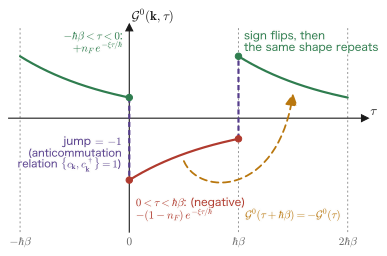

Chapter 13Matsubara Green's Functions and Analytic Continuation
In the first twelve chapters, we have tacitly assumed absolute zero in most situations. In the Kubo formula of Chapter 7 we took expectation values in the ground state $\ket{0}$, and in the Lehmann representation of Chapter 8 we counted the amplitudes for kicking the system out of $\ket{0}$ into an excited state $\ket{n}$. Real experiments, however, are carried out at room temperature. The resistance of a metal, neutron scattering, optical absorption—all of these are finite-temperature measurements. At finite temperature the system is not in its ground state. In that case, all we have to do is replace expectation values by the thermal average with Boltzmann weights
$$ \braket{\hat O} = \frac{1}{Z}\Tr\left[\ee^{-\beta\Ham}\hat O\right], \qquad Z=\Tr\,\ee^{-\beta\Ham},\qquad \beta=\frac{1}{k_BT} $$and we are done—put that way, the story is over in one line. In fact, the Kubo formula itself is correct with this replacement (we prove this in Section 13.9). The trouble lies beyond that. As soon as we try to handle $\ee^{-\beta\Ham}$ in an interacting system, every tool we built in Chapter 6 (adiabatic switching, the Gell-Mann–Low theorem, the Dyson series) becomes unusable. This is because that toolkit rests on the theorem that “if the interaction is switched on slowly from the infinite past, the ground state of the free system turns into the ground state of the interacting system,” and it was an argument that treats the ground state as special. At finite temperature there is no special state.
The answer that Takeo Matsubara gave in 1955 is, looking back now, so bold as to be hard to believe. Comparing the statistical weight $\ee^{-\beta\Ham}$ with the time evolution $\ee^{-\ii\Ham t/\hbar}$, he declared outright, “Isn't this just $t$ made imaginary?” If we set $t=-\ii\hbar\beta$, then $\ee^{-\ii\Ham t/\hbar}=\ee^{-\beta\Ham}$. In other words, temperature is imaginary time. With this one phrase, statistical mechanics and time evolution go into the same toolbox. Perturbation theory can use the Dyson series of Chapter 6 as it is, Wick's theorem holds, and Feynman diagrams can be drawn.
There is just one price to pay. What we can compute in this way is the imaginary-time function $\mathcal{G}(\tau)$, whereas what experiments measure is the real-time retarded response function $\chi^R(\omega)$. What connects the two is the protagonist of this chapter, the analytic continuation $\ii\omega_n\to\omega+\ii\eta$. “Why can the function on the real axis be reconstructed when we know its values only at discrete points on the imaginary axis?”—answering this question head-on is the task of Section 13.8, which is also the climax of the whole book.
- The route to inventing the imaginary time $\tau$ by comparing $\ee^{-\beta\Ham}$ with $\ee^{-\ii\Ham t/\hbar}$; why we introduce such a strange object, and why it is necessary
- The imaginary-time Heisenberg operator $\hat A(\tau)=\ee^{\Ham\tau/\hbar}\hat A\ee^{-\Ham\tau/\hbar}$, and the pitfall that $\hat A(\tau)^\dagger\neq\hat A(\tau)$
- The definition of the Matsubara Green's function $\mathcal{G}_{AB}(\tau)=-\braket{T_\tau\hat A(\tau)\hat B(0)}$ and of the imaginary-time-ordered product $T_\tau$
- Proof of the periodicity and antiperiodicity $\mathcal{G}(\tau+\beta\hbar)=\pm\mathcal{G}(\tau)$. It follows from the cyclicity of the trace alone, and it is the most beautiful calculation in this chapter
- The Matsubara frequencies that emerge inevitably from it: bosonic $\omega_n=2n\pi/\beta\hbar$, fermionic $\omega_n=(2n+1)\pi/\beta\hbar$
- Deriving the free-particle result $\mathcal{G}^0(\kk,\ii\omega_n)=\left(\ii\omega_n-\xi_\kk/\hbar\right)^{-1}$ by integrating from the definition
- How to carry out Matsubara frequency sums: multiply by $n_F(z)$ or $n_B(z)$ to turn the sum into a closed contour integral, and evaluate it with the residue theorem of Chapter 5
- The spectral representation and analytic continuation: $\mathcal{G}(\ii\omega_n)$ and $\chi^R(\omega)$ are the values of one and the same function at different arguments. The Baym–Mermin uniqueness theorem
- Linear response at finite temperature. The finite-temperature Lindhard function, and the fact that Debye screening and Thomas–Fermi screening are the two limits of the same formula
- A map to the many-body theory that lies ahead (Feynman diagrams, the Dyson equation, self-energy, GW, DMFT)
13.1 Motivation — Why Bring In Something as Strange as Imaginary Time?
13.1.1 What goes wrong at finite temperature?
First, let us state exactly what the trouble is. Computing the expectation value of a physical quantity at finite temperature means working with the density operator
$$ \begin{equation} \hat\rho_0 = \frac{\ee^{-\beta\Ham}}{Z}, \qquad Z = \Tr\,\ee^{-\beta\Ham}, \qquad \beta \equiv \frac{1}{k_BT} \label{eq:13-rho0} \end{equation} $$and using it to evaluate $\braket{\hat O}=\Tr[\hat\rho_0\hat O]$. Nothing up to this point is difficult. The difficulty arises when $\Ham$ contains interactions. For the electron gas, $\Ham=\sum_\kk\epsilon_\kk c^\dagger_\kk c_\kk+\frac{1}{2V}\sum v(q)c^\dagger c^\dagger c\,c$, and $\ee^{-\beta\Ham}$ is “the exponential of an operator that contains the interaction.” Almost no system lets us treat this exactly. So we want to use perturbation theory. Here, however, we run into a wall.
Three reasons the tools of Chapter 6 break down at finite temperature
- The Gell-Mann–Low theorem cannot be used. The adiabatic switching $\ee^{\eta t}$ introduced in Chapter 6 rested on the claim that “starting from the ground state of the free system at $t=-\infty$ and switching on the interaction slowly, we arrive at the ground state of the interacting system.” At finite temperature the starting point is not a ground state but a Boltzmann mixture of countless states. An adiabatic theorem for a mixed state does not exist as it stands.
- The expansion of $\ee^{-\beta\Ham}$ is not simple. When $\Ham=\Ham_0+\hat V$, we have $\ee^{-\beta(\Ham_0+\hat V)}\neq\ee^{-\beta\Ham_0}\ee^{-\beta\hat V}$ (because $[\Ham_0,\hat V]\neq0$). If we try to expand naively, the thorny problem arises of how to order $\Ham_0$ and $\hat V$.
- It is not clear how to use Wick's theorem. Feynman diagram calculations rest on Wick's theorem, which decomposes the expectation value of a product of many operators into pairs (contractions). At $T=0$ this holds thanks to the simple ground state known as the Fermi sphere (more generally, what is essential is that the reference state is free-particle-like, that is, Gaussian, and the Fermi sphere is its representative example). At finite temperature there is no ground state, so the theorem cannot be used in this form.
In short, at finite temperature we must rebuild “the framework of perturbation theory itself.” The Matsubara formalism is the framework for doing so.
13.1.2 Comparing two exponential functions
Let us pause here for a moment and simply look at the following two expressions.
$$ \underbrace{\ee^{-\ii\Ham t/\hbar}}_{\text{time-evolution operator (quantum mechanics)}} \qquad\qquad \underbrace{\ee^{-\beta\Ham}}_{\text{statistical weight (statistical mechanics)}} $$The one on the left is the protagonist of Chapter 6, and the one on the right is the protagonist of Eq. \eqref{eq:13-rho0}. One describes “what happens as time passes,” and the other describes “which states appear, and how much, at temperature $T$.” Physically they are completely different things. Yet their forms are strikingly alike. Both are nothing more than “$\Ham$ multiplied by something and exponentiated.”
Matsubara's idea — Forcibly identifying the two exponential functions
So we ask: What value of the time $t$ turns the time-evolution operator into the statistical weight?
$$ \ee^{-\ii\Ham t/\hbar} \;=\; \ee^{-\beta\Ham} \qquad\Longleftrightarrow\qquad -\frac{\ii t}{\hbar} = -\beta \qquad\Longleftrightarrow\qquad t = \frac{\hbar\beta}{\ii} = -\ii\hbar\beta $$The answer is $t=-\ii\hbar\beta$, that is, a purely imaginary time. Put differently:
The statistical weight $\ee^{-\beta\Ham}$ at temperature $T$ is nothing other than the operator that evolves the system in time by the imaginary time $-\ii\hbar\beta$.
This is the starting point of everything in this chapter. The higher the temperature (the smaller $\beta$), the shorter the imaginary-time interval; the lower the temperature (the larger $\beta$), the longer it is. As $T\to0$ the interval becomes infinitely long, and the normalized density operator $\hat\rho_0=\ee^{-\beta\Ham}/Z$ approaches the projection operator onto the ground state (because only the term with the lowest $E_0$ survives). The correspondence “low temperature = long imaginary time” will remain in effect from here on.
This correspondence is truly useful because it allows the following rewriting. Taking $\Ham=\Ham_0+\hat V$ and constructing the imaginary-time interaction picture, we obtain
$$ \begin{equation} \ee^{-\beta\Ham} = \ee^{-\beta\Ham_0}\; T_\tau\exp\left[-\frac{1}{\hbar}\int_0^{\beta\hbar}\dd\tau\,\hat V(\tau)\right] \label{eq:13-dyson-tau} \end{equation} $$Here $\hat V(\tau)\equiv\ee^{\Ham_0\tau/\hbar}\hat V\ee^{-\Ham_0\tau/\hbar}$, and what is evolved is only the free part $\Ham_0$ (note that this is different from the imaginary-time Heisenberg picture, defined in Section 13.2, in which operators are evolved with the full $\Ham$). $T_\tau$ is the ordered product with respect to imaginary time (defined in Section 13.3). This has exactly the same form as the Dyson series of Chapter 6,
$$ \hat U(t,t_0)=T\exp\left[-\frac{\ii}{\hbar}\int_{t_0}^{t}\dd t'\,\hat V(t')\right] $$The only differences are that $-\ii/\hbar$ has become $-1/\hbar$, and that the integration interval is the imaginary-time interval $[0,\beta\hbar]$ rather than the real-time interval $[t_0,t]$. That is, the calculation of the partition function of statistical mechanics has become, as it is, quantum-mechanical perturbation theory. All the tools built in Chapter 6 can be reused. This is the payoff of the Matsubara formalism.
13.1.3 What does “imaginary time” mean?
When told to “make time imaginary,” nobody can swallow the idea straightforwardly. Let us sort this out carefully here.
Mathematically, the clearest view is to consider a complex “time” $z$: motion along the real axis is ordinary time evolution, and descent along the negative imaginary axis is the statistical weight. This view is shown in Figure 13.1. This operation of rotating from the real axis to the imaginary axis by $90^\circ$ is called the Wick rotation in field theory.
13.2 Imaginary Time $\tau$ and Imaginary-Time Heisenberg Operators
13.2.1 Definition
In Chapter 6, the operator in the Heisenberg picture was
$$ \begin{equation} \hat A_H(t) = \ee^{\ii\Ham t/\hbar}\,\hat A\,\ee^{-\ii\Ham t/\hbar} \label{eq:13-heisenberg-real} \end{equation} $$Now we introduce imaginary time $\tau$ by
and substitute it into Eq. \eqref{eq:13-heisenberg-real}. Let us compute the exponent one step at a time:
$$ \frac{\ii\Ham t}{\hbar} = \frac{\ii\Ham(-\ii\tau)}{\hbar} = \frac{-\ii^2\Ham\tau}{\hbar} = \frac{\Ham\tau}{\hbar} $$All we used was $\ii\times(-\ii)=-\ii^2=+1$. Therefore
We call this the imaginary-time Heisenberg operator (the operator in the Matsubara picture). Note that the $\ii$ has disappeared and the exponent of the exponential function has become real. The exponential in Eq. \eqref{eq:13-heisenberg-real} was a phase factor of absolute value $1$, whereas the exponential in Eq. \eqref{eq:13-heisenberg-tau} is a real growth or damping factor. This difference governs everything that follows.
13.2.2 A pitfall: $\hat A(\tau)^\dagger \neq \hat A(\tau)$
Here is the first place where one stumbles in the imaginary-time formalism. In real time, if $\hat A$ is Hermitian ($\hat A^\dagger=\hat A$), then $\hat A_H(t)$ is also Hermitian. Indeed,
$$ \left[\hat A_H(t)\right]^\dagger = \left[\ee^{\ii\Ham t/\hbar}\hat A\,\ee^{-\ii\Ham t/\hbar}\right]^\dagger = \ee^{+\ii\Ham t/\hbar}\,\hat A^\dagger\,\ee^{-\ii\Ham t/\hbar} = \hat A_H(t) $$where we used $(\ee^{-\ii\Ham t/\hbar})^\dagger=\ee^{+\ii\Ham t/\hbar}$, which holds because $\Ham$ is Hermitian and $\ii$ changes sign under complex conjugation. In imaginary time, however, there is no $\ii$. Hence
Imaginary-time operators are non-Hermitian
$$ \begin{equation} \left[\hat A(\tau)\right]^\dagger = \left[\ee^{\Ham\tau/\hbar}\hat A\,\ee^{-\Ham\tau/\hbar}\right]^\dagger = \ee^{-\Ham\tau/\hbar}\,\hat A^\dagger\,\ee^{+\Ham\tau/\hbar} = \hat A^\dagger(-\tau) \label{eq:13-dagger} \end{equation} $$That is, taking the dagger reverses the sign of $\tau$. Even if $\hat A$ is Hermitian, $\hat A(\tau)^\dagger=\hat A(-\tau)\neq\hat A(\tau)$.
Particular care is needed for creation and annihilation operators. In imaginary time, the two operators
$$ \hat c(\tau)=\ee^{\Ham\tau/\hbar}\hat c\,\ee^{-\Ham\tau/\hbar}, \qquad \bar{c}(\tau)\equiv\ee^{\Ham\tau/\hbar}\hat c^\dagger\ee^{-\Ham\tau/\hbar} $$are by convention defined separately, and $\bar c(\tau)$ is not the Hermitian conjugate of $\hat c(\tau)$ (we have $[\hat c(\tau)]^\dagger=\bar c(-\tau)$). Many textbooks use the symbols $\bar c$ or $c^\dagger(\tau)$ in order to make this situation conspicuous. A notation that “carries a $\dagger$ and yet is not a Hermitian conjugate” seems absurd at first sight, but unless you are aware of this, you will invariably get the signs wrong.
The fundamental reason is that the unitarity of the real-time theory (that is, the conservation of probability) is lost the moment we substitute a purely imaginary number for $t$. The imaginary-time formalism is not unitary. The information that is lost is recovered at the end by analytic continuation back to the real axis.
13.2.3 Equation of motion
Let us differentiate Eq. \eqref{eq:13-heisenberg-tau} with respect to $\tau$. Using the product rule and noting that $\Ham$ and $\ee^{\pm\Ham\tau/\hbar}$ commute, we obtain
Derivation: The imaginary-time Heisenberg equation
Step 1: Differentiating. Using $\frac{\dd}{\dd\tau}\ee^{\Ham\tau/\hbar}=\frac{\Ham}{\hbar}\ee^{\Ham\tau/\hbar}$ and $\frac{\dd}{\dd\tau}\ee^{-\Ham\tau/\hbar}=-\frac{\Ham}{\hbar}\ee^{-\Ham\tau/\hbar}$, we get
$$ \frac{\dd\hat A(\tau)}{\dd\tau} = \frac{\Ham}{\hbar}\ee^{\Ham\tau/\hbar}\hat A\ee^{-\Ham\tau/\hbar} \;+\;\ee^{\Ham\tau/\hbar}\hat A\left(-\frac{\Ham}{\hbar}\right)\ee^{-\Ham\tau/\hbar} $$Step 2: Moving $\Ham$ to the inside of the exponentials. Since $\Ham$ and $\ee^{\Ham\tau/\hbar}$ commute, we can move the $\Ham$ of the first term to the right and the $\Ham$ of the second term to the left:
$$ = \frac{1}{\hbar}\ee^{\Ham\tau/\hbar}\left(\Ham\hat A-\hat A\Ham\right)\ee^{-\Ham\tau/\hbar} = \frac{1}{\hbar}\ee^{\Ham\tau/\hbar}[\Ham,\hat A]\,\ee^{-\Ham\tau/\hbar} $$Step 3: Putting the right-hand side into the form of an imaginary-time operator as well. Since $[\Ham,\hat A]$ is itself a single operator, applying the definition in Eq. \eqref{eq:13-heisenberg-tau} gives
∎ Compared with the real-time Heisenberg equation $\ii\hbar\frac{\dd\hat A_H}{\dd t}=[\hat A_H,\Ham]$, the $\ii$ has disappeared and the order in the commutator has been reversed. Eq. \eqref{eq:13-eom} is of diffusion-equation type ($\partial_\tau=\cdots$), in contrast to the real-time version, which was of wave-equation type ($\ii\partial_t=\cdots$). It is enough to remember that in imaginary time, instead of oscillating, things decay or grow exponentially.
13.2.4 Using the grand canonical ensemble
For a many-particle system, it is easier to compute by fixing the chemical potential $\mu$ than by fixing the particle number. So from now on, whenever necessary, we use
This is the grand canonical ensemble, where $\hat N$ is the particle-number operator. The imaginary-time evolution of an operator is also defined with $\hat K$ rather than $\Ham$: $\hat A(\tau)=\ee^{\hat K\tau/\hbar}\hat A\ee^{-\hat K\tau/\hbar}$. Fetter–Walecka also follow this convention.
When to use $\Ham$ and when to use $\hat K$
To avoid confusion, we proceed as follows in this chapter.
- In the general theory of Sections 13.2–13.5, we write $\Ham$. Replacing it with $\hat K$ leaves the argument valid word for word (since $\hat K$ is also a Hermitian operator).
- In the concrete calculations from Section 13.6 onward, we use $\hat K$ and write the one-particle energy as $\xi_\kk\equiv\epsilon_\kk-\mu$. Here $\xi_\kk$ is the energy measured from the Fermi surface; at $T=0$, states with $\xi_\kk<0$ are occupied and states with $\xi_\kk>0$ are unoccupied.
There is one more reason for subtracting $\mu$. Since $\hat N$ commutes with $\Ham$ (particle-number conservation), we can split $\ee^{-\beta\hat K}=\ee^{-\beta\Ham}\ee^{\beta\mu\hat N}$, and each time one creation operator is added, a factor $\ee^{\beta\mu}$ appears. If we absorb this into $\xi$ from the start, the proof of (anti)periodicity in Section 13.4 holds as it stands even for operators that change the particle number.
13.3 Definition of the Matsubara Green's Function
13.3.1 Transferring the real-time Green's function to imaginary time
At the end of Chapter 8 (Section 8.8), we looked at the time-ordered response function
$$ \chi^T_{AB}(t) = -\frac{\ii}{\hbar}\braket{T\,\hat A_H(t)\hat B(0)} $$This is the type that Feynman diagrams naturally produce, but because it lacks analyticity in the upper half-plane, it does not connect directly to experiment—that was the story. The Matsubara Green's function is the imaginary-time version of this.
Definition 13.1: Matsubara Green's function
For two operators $\hat A,\hat B$, the Matsubara Green's function is defined as
Here $\hat A(\tau)$ is the imaginary-time Heisenberg operator of Eq. \eqref{eq:13-heisenberg-tau}, $\braket{\cdots}$ is the thermal average, and $T_\tau$ is the imaginary-time-ordered product, defined next. The domain is taken to be $-\beta\hbar < \tau < \beta\hbar$ (we will see in Section 13.4 why this range).
The leading minus sign is a convention. With it in place, we later obtain the clean form $\mathcal{G}^0=(\ii\omega_n-\xi/\hbar)^{-1}$, with no extra sign.
Definition 13.2: Imaginary-time-ordered product $T_\tau$ and the statistics sign $\zeta$
$T_\tau$ is the operation of “rearranging so that the operators with larger $\tau$ stand to the left.” However, each time fermion operators are interchanged, we attach a minus sign. Here we define the statistics sign by
$$ \zeta \equiv \begin{cases} +1 & \hat A,\hat B \text{ are bosonic (a product of an even number of fermion operators, or a boson operator)}\\ -1 & \hat A,\hat B \text{ are fermionic (a product of an odd number of fermion operators)} \end{cases} $$With this definition, the action of $T_\tau$ can be written in a single line:
Therefore Definition 13.1 can be written out explicitly, using the $\theta$ function, as follows:
Why do we need the sign $\zeta$?
Fermion operators anticommute ($c_1c_2=-c_2c_1$). Unless we attach a minus sign to the operation of interchanging the order, $T_\tau$ is not consistent as a “rearrangement.” For example, for $\tau_1<\tau_2$ we have $T_\tau[c(\tau_1)\bar c(\tau_2)] = -\bar c(\tau_2)c(\tau_1)$. If we forget this sign, the signs of the Feynman diagrams collapse completely in Wick's theorem.
On the other hand, the operators this book uses for response functions (density, current, spin, position, and so on) are all bosonic. The density operator $\hat\rho=\hat\psi^\dagger\hat\psi$ consists of two fermion operators, the current likewise of two, and the position $\hat x$ is not a fermion operator at all. In short, this means that an observable containing an even number of fermion operators has $\zeta=+1$; if we instead deal with quantities built by pairing operators that each contain an odd number of fermion operators (the one-particle propagator, the anomalous Green's function of superconductivity $-\braket{T_\tau c(\tau)c(0)}$, and so on), they are not of the bosonic type. Therefore all the $\mathcal{G}$ used in linear response have $\zeta=+1$ (periodic). The case $\zeta=-1$ (antiperiodic) is needed when we deal with a Green's function that inserts one particle and removes one, such as the one-particle propagator $\mathcal{G}(\kk,\tau)=-\braket{T_\tau c_\kk(\tau)\bar c_\kk(0)}$.
In this book we treat both in parallel. The reason is simple: combining one-particle propagators (fermionic type) to build response functions (bosonic type) is the standard procedure in many-body theory (Section 13.9 and Exercise 13.3).
13.3.2 Why do we care about the ordering in $\tau$?
The time-ordered product $T$ in real time had the meaning of “arranging in the causally correct order.” The imaginary-time $T_\tau$ has no such physical meaning. Why, then, is it needed?
Without $T_\tau$ the expression diverges
What happens if we compute $\braket{\hat A(\tau)\hat B}$ for $\tau>0$? Let us look at it using the Lehmann representation. Sandwiching the operators between eigenstates $\ket{a}$ of energy $E_a$ (we derive this carefully in Section 13.8), we obtain an expression of the form
$$ \braket{\hat A(\tau)\hat B} = \frac1Z\sum_{a,b}\ee^{-\beta E_a}\,\ee^{(E_a-E_b)\tau/\hbar}\,A_{ab}B_{ba} $$Now, rewriting $\ee^{-\beta E_a}\ee^{(E_a-E_b)\tau/\hbar}=\ee^{-(\beta\hbar-\tau)E_a/\hbar}\ee^{-\tau E_b/\hbar}$, we see that the following is required for this sum to converge:
$$ \beta\hbar-\tau > 0 \quad\text{and}\quad \tau > 0, \qquad\text{that is}\qquad 0 < \tau < \beta\hbar $$(Otherwise the terms with $E_a\to\infty$ or $E_b\to\infty$ grow exponentially and the sum diverges.) That is, the quantity $\braket{\hat A(\tau)\hat B}$ converges in this naive form only for $0<\tau<\beta\hbar$. We should take care here not to declare flatly that “therefore no value exists outside this range.” What has just been shown is that “if we carry the Lehmann sum outside the interval as it stands, it diverges”; it does not mean that the outside of the interval is forbidden. To state the conclusion first: there is no need to carry it outside in the first place (next section).
Similarly, $\braket{\hat B\hat A(\tau)}$ converges naively for $-\beta\hbar<\tau<0$. Gluing these two together with $\theta$ functions gives Eq. \eqref{eq:13-G-explicit}. That is, $T_\tau$ is a device for “choosing, in each region, the expression that converges”, and it makes $\mathcal{G}(\tau)$ well defined over the whole range $-\beta\hbar<\tau<\beta\hbar$.
This is not a mere technique. It is the fundamental reason why the imaginary-time formalism is confined to the finite interval $\abs{\tau}<\beta\hbar$, and it leads directly to the (anti)periodicity of the next section and then to the discrete frequencies of Section 13.5.
Advice from Prof. Takao Kotani: The range of $\tau$ is not “undefinable” but “complete within itself”
Naively, since a response function is a function of real time $t$, one would like a formalism in which $\tau$ is regarded as similar to $t$ and runs from $-\infty$ to $\infty$. But as we have just seen, that diverges and breaks down. Yet if we look closely at $\braket{\hat A(\tau)\hat B}$ appearing in Eq. \eqref{eq:13-G-explicit}, we notice that the following relation holds for $-\beta\hbar<\tau<0$:
$$ \braket{\hat A(\tau+\beta\hbar)\,\hat B} = \braket{\hat B\,\hat A(\tau)} $$(This is the relation known as the Kubo–Martin–Schwinger (KMS) condition; Steps 3–5 of the proof in Section 13.4.3 are precisely this calculation.) In other words, even if we shift $\tau$ by $\beta\hbar$, we merely go back and forth between the region of $\braket{\hat A(\tau)\hat B}$ and the region of $\braket{\hat B\hat A(\tau)}$ and return to where we started. The $\mathcal{G}$ glued together by the time-ordered product carries no new information whatsoever outside the interval. So, to put it correctly, the range of $\tau$ is not undefinable; rather, the theory is complete within that range alone, so we need not consider the other regions of $\tau$.
Nor need we worry that we have lost something by confining ourselves to a finite interval. This is because what remains there are the values on the infinite set of points called the discrete Matsubara frequencies (Section 13.5), and in complex analysis “even if the values are given only at discrete points, as long as they are given at infinitely many points they can be extended to the whole domain.” This is, however, not an unconditional statement: it requires analyticity in the upper half-plane and decay of the $1/\abs{z}$ type as $\abs{z}\to\infty$ (Theorem 13.4 in Section 13.8.4). We will also check in Section 13.8.4, with a counterexample, that dropping these conditions really does break uniqueness. The fact, noted in the caption of Figure 13.1, that “the range over which imaginary time moves is limited to the finite interval $[0,\hbar\beta]$” is not a restriction of the formalism; it is nothing other than a statement that the formalism is self-contained. Prof. Matsubara probably had his flash of inspiration from this self-containment.
—The above is based on advice received from Prof. Takao Kotani, the developer of the QSGW method (personal communication, August 2026).
13.4 Periodicity and Antiperiodicity — The Most Important Calculation in This Chapter
13.4.1 The claim
We now arrive at the heart of this chapter. The Matsubara Green's function has a strikingly simple property at the ends of the interval.
Theorem 13.1: (Anti)periodicity
For $-\beta\hbar < \tau < 0$,
That is, $\mathcal{G}$ repeats in imaginary time with period $\beta\hbar$ (up to a sign). Therefore all the information in $\mathcal{G}$ is contained in the interval $0\le\tau\le\beta\hbar$.
Why is this “the most important in this chapter”?
Because this property gives rise to everything in this chapter. A periodic function can be expanded in a Fourier series, so the frequencies become discrete (Matsubara frequencies, Section 13.5); and this raises the question of whether we can recover the values on the real axis even though we know the function only on that discrete sequence of points (analytic continuation, Section 13.8). Moreover, the origin of the periodicity is the cyclicity of the trace, that is, “the system being in thermal equilibrium” itself. For this reason it does not hold for nonequilibrium systems, and the Matsubara formalism cannot be used there either (Section 13.10).
The proof uses nothing but the cyclicity of the trace, $\Tr[\hat X\hat Y\hat Z]=\Tr[\hat Z\hat X\hat Y]$. It is a three-line calculation, but it is worth following one line at a time.
13.4.2 Preparation: cyclicity of the trace
Check: cyclicity of the trace
For arbitrary operators $\hat X,\hat Y$, writing the trace in terms of components gives
$$ \Tr[\hat X\hat Y] = \sum_{m}\bra{m}\hat X\hat Y\ket{m} = \sum_{m,n}X_{mn}Y_{nm} = \sum_{n,m}Y_{nm}X_{mn} = \Tr[\hat Y\hat X] $$Here all we did was to swap the order of the factors in a product of numbers. Repeating this, we obtain
$$ \Tr[\hat X\hat Y\hat Z] = \Tr[\hat Z\hat X\hat Y] = \Tr[\hat Y\hat Z\hat X] $$It suffices to remember that “the rightmost factor may be moved around to the far left.” This does not mean that the order may be rearranged arbitrarily ($\Tr[\hat X\hat Y\hat Z]\neq\Tr[\hat Y\hat X\hat Z]$ in general). This freedom to “move factors around” alone is enough to yield Theorem 13.1.
13.4.3 Proof
Derivation: Proof of Theorem 13.1 — one line at a time
In what follows, suppose that $-\beta\hbar<\tau<0$. Then $\tau+\beta\hbar$ lies in the range $0<\tau+\beta\hbar<\beta\hbar$. We compute $\mathcal{G}(\tau)$ and $\mathcal{G}(\tau+\beta\hbar)$ separately and compare them at the end.
Step 1: Writing down $\mathcal{G}(\tau)$. Since $\tau<0$, the second term of Eq. \eqref{eq:13-G-explicit} survives:
$$ \mathcal{G}_{AB}(\tau) = -\zeta\braket{\hat B(0)\hat A(\tau)} = -\frac{\zeta}{Z}\Tr\left[\ee^{-\beta\Ham}\,\hat B\,\hat A(\tau)\right] \tag{A} $$We will use this later, so we label it Eq. (A) and set it aside.
Step 2: Writing down $\mathcal{G}(\tau+\beta\hbar)$. This time the argument is positive, so the first term of Eq. \eqref{eq:13-G-explicit} survives:
$$ \mathcal{G}_{AB}(\tau+\beta\hbar) = -\braket{\hat A(\tau+\beta\hbar)\hat B(0)} = -\frac{1}{Z}\Tr\left[\ee^{-\beta\Ham}\,\hat A(\tau+\beta\hbar)\,\hat B\right] $$Step 3: Expanding $\hat A(\tau+\beta\hbar)$ according to its definition. By Eq. \eqref{eq:13-heisenberg-tau},
$$ \hat A(\tau+\beta\hbar) = \ee^{\Ham(\tau+\beta\hbar)/\hbar}\,\hat A\,\ee^{-\Ham(\tau+\beta\hbar)/\hbar} $$We split the exponents. Since functions of $\Ham$ commute with one another, the laws of exponents can be used as they are:
$$ \ee^{\Ham(\tau+\beta\hbar)/\hbar} = \ee^{\Ham\tau/\hbar}\,\ee^{\beta\Ham}, \qquad \ee^{-\Ham(\tau+\beta\hbar)/\hbar} = \ee^{-\Ham\tau/\hbar}\,\ee^{-\beta\Ham} $$Hence the quantity inside the trace is
$$ \ee^{-\beta\Ham}\,\hat A(\tau+\beta\hbar)\,\hat B = \ee^{-\beta\Ham}\;\ee^{\Ham\tau/\hbar}\ee^{\beta\Ham}\;\hat A\;\ee^{-\Ham\tau/\hbar}\ee^{-\beta\Ham}\;\hat B $$Step 4: Combining the three exponential functions on the left. The factors $\ee^{-\beta\Ham}$, $\ee^{\Ham\tau/\hbar}$, and $\ee^{\beta\Ham}$ are all functions of $\Ham$, so they commute with one another, and their exponents can be added:
$$ \ee^{-\beta\Ham}\,\ee^{\Ham\tau/\hbar}\,\ee^{\beta\Ham} = \ee^{(-\beta+\tau/\hbar+\beta)\Ham} = \ee^{\Ham\tau/\hbar} $$The factor $\ee^{-\beta\Ham}$ has disappeared. This is the crux of the proof. The statistical weight has been neatly absorbed into the imaginary-time evolution. Therefore
$$ \mathcal{G}_{AB}(\tau+\beta\hbar) = -\frac{1}{Z}\Tr\left[\;\underbrace{\ee^{\Ham\tau/\hbar}\hat A\,\ee^{-\Ham\tau/\hbar}}_{=\;\hat A(\tau)}\;\ee^{-\beta\Ham}\,\hat B\;\right] = -\frac{1}{Z}\Tr\left[\hat A(\tau)\,\ee^{-\beta\Ham}\,\hat B\right] $$Step 5: Cyclically permuting the factors in the trace. The inside of the trace is now the product $\Tr[\hat X\hat Y\hat Z]$ of the three factors $\hat X=\hat A(\tau)$, $\hat Y=\ee^{-\beta\Ham}$, and $\hat Z=\hat B$. Using the cyclicity $\Tr[\hat X\hat Y\hat Z]=\Tr[\hat Y\hat Z\hat X]$, we move $\hat A(\tau)$ around to the far right:
$$ \Tr\left[\hat A(\tau)\,\ee^{-\beta\Ham}\,\hat B\right] = \Tr\left[\ee^{-\beta\Ham}\,\hat B\,\hat A(\tau)\right] $$Therefore
$$ \mathcal{G}_{AB}(\tau+\beta\hbar) = -\frac{1}{Z}\Tr\left[\ee^{-\beta\Ham}\,\hat B\,\hat A(\tau)\right] \tag{B} $$Step 6: Comparing Eq. (A) and Eq. (B). Their right-hand sides differ only in whether the factor $-\zeta$ is attached. From Eq. (A),
$$ \frac{1}{Z}\Tr\left[\ee^{-\beta\Ham}\hat B\hat A(\tau)\right] = -\frac{1}{\zeta}\,\mathcal{G}_{AB}(\tau) = -\zeta\,\mathcal{G}_{AB}(\tau) $$where we used $1/\zeta=\zeta$, which holds because $\zeta=\pm1$. Substituting this into Eq. (B), we obtain
$$ \mathcal{G}_{AB}(\tau+\beta\hbar) = -\left(-\zeta\,\mathcal{G}_{AB}(\tau)\right) = \zeta\,\mathcal{G}_{AB}(\tau) $$∎ Theorem 13.1 has been shown. We used only two things: (i) the laws of exponents (which hold because functions of $\Ham$ commute with one another) and (ii) the cyclicity of the trace.
13.4.4 Checking with free particles (a preview)
Although we derive it in Section 13.6, the Matsubara Green's function of a free fermion is $-\left[1-n_F(\xi_\kk)\right]\ee^{-\xi_\kk\tau/\hbar}$ for $0<\tau<\beta\hbar$ and $+n_F(\xi_\kk)\ee^{-\xi_\kk\tau/\hbar}$ for $-\beta\hbar<\tau<0$. Shifting $\tau$ by $-\beta\hbar$ produces a factor $\ee^{\beta\xi}$, and, by the identity for the Fermi distribution $n_F\ee^{\beta\xi}=\dfrac{\ee^{\beta\xi}}{\ee^{\beta\xi}+1}=\dfrac{1}{1+\ee^{-\beta\xi}}=1-n_F$, the sign is reversed. This is the true nature of the antiperiodicity. For the Bose distribution, $n_B\ee^{\beta\xi}=1+n_B$, which instead gives periodicity (Exercise 13.1). Figure 13.2 illustrates this behavior.

13.5 Matsubara Frequencies and the Fourier Series
13.5.1 A periodic function becomes a Fourier series
Why are the frequencies discrete? — the correspondence with a vibrating string
If a string of length $L$ is fixed at both ends, the allowed wavelengths are discrete: $\lambda=2L,L,2L/3,\dots$. For an infinitely long string, any wavelength is allowed. A wave confined to a finite interval can have only discrete frequencies—this is a principle that appears everywhere in physics.
The situation in the Matsubara formalism is exactly the same. Real time $t$ moves freely from $-\infty$ to $+\infty$, so the Fourier transform became an integral over a continuous $\omega$ (the convention of Chapter 1). Imaginary time $\tau$, however, is confined to the finite interval $[-\beta\hbar,\beta\hbar]$ (Section 13.3.2). Therefore the Fourier expansion is not an integral but a series, and the frequencies are discrete rather than continuous.
The spacing between the discrete values is proportional to the inverse of the length of the interval, that is, $\sim1/\beta\hbar=k_BT/\hbar$. The higher the temperature, the sparser the Matsubara frequencies; the lower the temperature, the denser. As $T\to0$ the spacing goes to zero, and the sum turns into a continuous integral over imaginary frequency (the $T=0$ formalism). Note, however, that this is strictly a statement about the imaginary axis; to obtain the response at real frequencies we still need analytic continuation (Section 13.8).
13.5.2 Writing down the expansion
$\mathcal{G}(\tau)$ is defined on the interval $(-\beta\hbar,\beta\hbar)$, an interval of length $2\beta\hbar$. Let us set up a Fourier series on this interval. The complex exponentials that fit into an interval of length $2\beta\hbar$ are
$$ \ee^{-\ii\omega_n\tau}, \qquad \omega_n = \frac{n\pi}{\beta\hbar} \quad (n = 0,\pm1,\pm2,\dots) $$In fact, $\ee^{-\ii\omega_n(\tau+2\beta\hbar)}=\ee^{-\ii\omega_n\tau}\ee^{-2\ii n\pi}=\ee^{-\ii\omega_n\tau}$, so they have period $2\beta\hbar$. These functions form a complete orthogonal system on the interval $(-\beta\hbar,\beta\hbar)$. Therefore we can expand
$$ \begin{equation} \mathcal{G}(\tau) = \frac{1}{\beta\hbar}\sum_{n=-\infty}^{\infty}\ee^{-\ii\omega_n\tau}\,\mathcal{G}(\ii\omega_n), \qquad \mathcal{G}(\ii\omega_n) = \frac12\int_{-\beta\hbar}^{\beta\hbar}\dd\tau\;\ee^{\ii\omega_n\tau}\,\mathcal{G}(\tau) \label{eq:13-fourier-raw} \end{equation} $$The allocation of the prefactors ($1/\beta\hbar$ and $1/2$) is a matter of convention, but as we will see later, this choice turns out to be the cleanest.
13.5.3 Half of the $n$ drop out — the birth of the Matsubara frequencies
Derivation: Feeding the (anti)periodicity into Eq. \eqref{eq:13-fourier-raw}
Step 1: Splitting the integral in two.
$$ \mathcal{G}(\ii\omega_n) = \frac12\int_{-\beta\hbar}^{0}\dd\tau\,\ee^{\ii\omega_n\tau}\mathcal{G}(\tau) + \frac12\int_{0}^{\beta\hbar}\dd\tau\,\ee^{\ii\omega_n\tau}\mathcal{G}(\tau) $$Step 2: Changing variables in the first integral. Let $\tau = \tau'-\beta\hbar$. When $\tau$ moves along $-\beta\hbar\to0$, $\tau'$ moves along $0\to\beta\hbar$, and $\dd\tau=\dd\tau'$. The exponential is
$$ \ee^{\ii\omega_n\tau} = \ee^{\ii\omega_n(\tau'-\beta\hbar)} = \ee^{\ii\omega_n\tau'}\,\ee^{-\ii\omega_n\beta\hbar} $$and, since $\omega_n\beta\hbar = n\pi$, we have $\ee^{-\ii\omega_n\beta\hbar}=\ee^{-\ii n\pi}=(-1)^n$.
Step 3: Rewriting $\mathcal{G}(\tau'-\beta\hbar)$ by means of the (anti)periodicity. Applying Theorem 13.1 with $\tau\to\tau'-\beta\hbar$ gives $\mathcal{G}(\tau')=\zeta\,\mathcal{G}(\tau'-\beta\hbar)$, that is,
$$ \mathcal{G}(\tau'-\beta\hbar) = \frac{1}{\zeta}\mathcal{G}(\tau') = \zeta\,\mathcal{G}(\tau') $$(again $1/\zeta=\zeta$). Therefore the first integral becomes
$$ \frac12\int_{-\beta\hbar}^{0}\dd\tau\,\ee^{\ii\omega_n\tau}\mathcal{G}(\tau) = \frac{(-1)^n\zeta}{2}\int_{0}^{\beta\hbar}\dd\tau'\,\ee^{\ii\omega_n\tau'}\mathcal{G}(\tau') $$and it has turned into exactly the same integral as the second one.
Step 4: Adding them up. Renaming the integration variable back to $\tau$, we obtain
Step 5: Reading off the prefactor. This is the decisive point. The factor $\frac{1+(-1)^n\zeta}{2}$ takes only the value $0$ or $1$.
- Bosonic ($\zeta=+1$): if $n$ is even, $\frac{1+1}{2}=1$; if $n$ is odd, $\frac{1-1}{2}=0$. All the components with odd $n$ vanish.
- Fermionic ($\zeta=-1$): if $n$ is even, $\frac{1-1}{2}=0$; if $n$ is odd, $\frac{1+1}{2}=1$. All the components with even $n$ vanish.
∎ Half of the frequencies have dropped out automatically. If we renumber the surviving frequencies, we obtain the following definition.
Definition 13.3: Matsubara frequencies
These are called the Matsubara frequencies. With this notation, the Fourier transform and its inverse become
Here $\sum_n$ is the sum over all the allowed Matsubara frequencies (the even ones for the bosonic case, the odd ones for the fermionic case). Note that the integration interval has been cut down to only half, $[0,\beta\hbar]$ (we have used up the factor $1$ of Eq. \eqref{eq:13-half}).
Why do we write the argument as $\ii\omega_n$?
We write $\mathcal{G}(\ii\omega_n)$ rather than $\mathcal{G}(\omega_n)$. This is not mere taste. As we will see in Section 13.8, $\mathcal{G}$ is the value, at $z=\ii\omega_n$ (a purely imaginary number), of a single function $\mathcal{G}(z)$ defined on the complex plane. The notation is meant to convey the following feeling: “the argument is a complex number $z$, and we are now looking at it at the point $\ii\omega_n$ on the imaginary axis.” Once this feeling is grasped, the meaning of the analytic continuation $\ii\omega_n\to\omega+\ii\eta$ also becomes clear in a natural way.
It is also worth memorizing the following values, since this makes calculations faster:
$$ \ee^{\ii\omega_n\beta\hbar} = \begin{cases} \ee^{2\ii n\pi} = +1 & \text{bosonic}\\ \ee^{\ii(2n+1)\pi} = -1 & \text{fermionic} \end{cases} \qquad\text{that is}\quad \ee^{\ii\omega_n\beta\hbar}=\zeta $$In every integral of Sections 13.6 and 13.8, the matter is settled at the point where this value is substituted.
| Bosonic ($\zeta=+1$) | Fermionic ($\zeta=-1$) | |
|---|---|---|
| What kind of operator | density, current, spin, position (an even number of fermion operators) | creation and annihilation of a single particle (an odd number of fermion operators) |
| Sign of $T_\tau$ | sign unchanged under interchange | factor $-1$ under interchange |
| Property in imaginary time | periodic: $\mathcal{G}(\tau+\beta\hbar)=+\mathcal{G}(\tau)$ | antiperiodic: $\mathcal{G}(\tau+\beta\hbar)=-\mathcal{G}(\tau)$ |
| Matsubara frequency | $\omega_n=2n\pi/\beta\hbar$ (includes $0$) | $\omega_n=(2n+1)\pi/\beta\hbar$ (does not include $0$) |
| $\ee^{\ii\omega_n\beta\hbar}$ | $+1$ | $-1$ |
| Function used in the sum (Section 13.7) | $n_B(z)=(\ee^{\beta\hbar z}-1)^{-1}$ | $n_F(z)=(\ee^{\beta\hbar z}+1)^{-1}$ |
| Main use in this book | response function $\chi$ (Chapters 9–12) | electron propagator (Section 13.6 onward) |
13.6 Examples: The Free Particle and the Harmonic Oscillator
The discussion has been abstract for a while, so now let us actually work through a calculation by hand. We derive the Matsubara Green's function of a free particle from the definition using nothing but integrals. Every many-body calculation can be assembled using this $\mathcal{G}^0$ as a building block, so we will come back to the calculation in this section again and again.
13.6.1 $c_\kk(\tau)$ in imaginary time
We treat a system of free fermions in the grand canonical ensemble. The Hamiltonian is
$$ \begin{equation} \hat K = \Ham_0-\mu\hat N = \sum_{\kk}\xi_\kk\,c^\dagger_\kk c_\kk, \qquad \xi_\kk \equiv \epsilon_\kk-\mu \label{eq:13-K0} \end{equation} $$(the spin index is included in $\kk$). First we find $c_\kk(\tau)=\ee^{\hat K\tau/\hbar}c_\kk\ee^{-\hat K\tau/\hbar}$.
Derivation: $c_\kk(\tau)=c_\kk\,\ee^{-\xi_\kk\tau/\hbar}$
Step 1: Setting up the equation of motion. From Eq. \eqref{eq:13-eom} ($\Ham\to\hat K$),
$$ \hbar\frac{\dd c_\kk(\tau)}{\dd\tau} = \left[\hat K,\,c_\kk(\tau)\right] $$Step 2: Computing the commutator $[\hat K,c_\kk]$. Since $\hat K=\sum_l\xi_l c^\dagger_l c_l$,
$$ [\hat K,c_\kk] = \sum_l \xi_l\left[c^\dagger_l c_l,\,c_\kk\right] $$Here we use the anticommutation relations $\{c_l,c^\dagger_m\}=\delta_{lm}$ and $\{c_l,c_m\}=0$. Using the identity
$$ [\hat X\hat Y,\hat Z] = \hat X\{\hat Y,\hat Z\}-\{\hat X,\hat Z\}\hat Y $$(take $\hat X=c^\dagger_l,\hat Y=c_l,\hat Z=c_\kk$; the identity is verified immediately by expanding both sides), we obtain
$$ \left[c^\dagger_l c_l,\,c_\kk\right] = c^\dagger_l\underbrace{\{c_l,c_\kk\}}_{=0}-\underbrace{\{c^\dagger_l,c_\kk\}}_{=\delta_{lk}}c_l = -\delta_{lk}\,c_l $$Hence $[\hat K,c_\kk] = -\xi_\kk c_\kk$. The annihilation operator is an “eigenoperator” of $\hat K$: taking the commutator returns $-\xi_\kk$ times the operator itself.
Step 3: Solving the differential equation. Sandwiching the relation of Step 2 between $\ee^{\hat K\tau/\hbar}(\cdots)\ee^{-\hat K\tau/\hbar}$ gives $[\hat K,c_\kk(\tau)]=-\xi_\kk c_\kk(\tau)$ (since $\hat K$ commutes with the exponential function, the $\tau$-dependent form follows directly). Therefore
$$ \hbar\frac{\dd c_\kk(\tau)}{\dd\tau} = -\xi_\kk\,c_\kk(\tau) \qquad\Longrightarrow\qquad c_\kk(\tau) = c_\kk\,\ee^{-\xi_\kk\tau/\hbar} $$We used the initial condition $c_\kk(0)=c_\kk$. Similarly, since $[\hat K,c^\dagger_\kk]=+\xi_\kk c^\dagger_\kk$,
∎ In real time, $c_\kk(t)=c_\kk\ee^{-\ii\xi_\kk t/\hbar}$ was a rotation of the phase; in imaginary time it has become a real exponential function.
13.6.2 $\mathcal{G}^0$ in the $\tau$ representation
Derivation: $\mathcal{G}^0(\kk,\tau)$
The case $\tau>0$. Since $\zeta=-1$ (fermionic) in Eq. \eqref{eq:13-G-explicit},
$$ \mathcal{G}^0(\kk,\tau) = -\braket{c_\kk(\tau)c^\dagger_\kk} = -\ee^{-\xi_\kk\tau/\hbar}\braket{c_\kk c^\dagger_\kk} $$We evaluate $\braket{c_\kk c^\dagger_\kk}$. Using the anticommutation relation $c_\kk c^\dagger_\kk = 1-c^\dagger_\kk c_\kk$, and since $\braket{c^\dagger_\kk c_\kk}=n_F(\xi_\kk)$ (the occupation number of a free particle is given by the Fermi distribution), we have
$$ \braket{c_\kk c^\dagger_\kk} = 1-n_F(\xi_\kk), \qquad n_F(\xi) \equiv \frac{1}{\ee^{\beta\xi}+1} $$That is,
$$ \mathcal{G}^0(\kk,\tau) = -\left[1-n_F(\xi_\kk)\right]\ee^{-\xi_\kk\tau/\hbar} \qquad (0<\tau<\beta\hbar) $$The case $\tau<0$. Inserting $\zeta=-1$ into the second term of Eq. \eqref{eq:13-G-explicit} makes the sign $+$, so
$$ \mathcal{G}^0(\kk,\tau) = +\braket{c^\dagger_\kk c_\kk(\tau)} = +\ee^{-\xi_\kk\tau/\hbar}\braket{c^\dagger_\kk c_\kk} = +\,n_F(\xi_\kk)\,\ee^{-\xi_\kk\tau/\hbar} \qquad (-\beta\hbar<\tau<0) $$∎ The expression we previewed in Section 13.4.4 has emerged. In particular, the value at $\tau=0^-$
is the occupation number itself. This relation holds in general (interacting) systems too, in the form $\mathcal{G}(\kk,0^-)=\braket{c^\dagger_\kk c_\kk}$, and it is a standard means of extracting the particle number and the momentum distribution from the Matsubara Green's function.
13.6.3 $\mathcal{G}^0$ in the $\ii\omega_n$ representation — the main result of this section
Derivation: $\mathcal{G}^0(\kk,\ii\omega_n)=\left(\ii\omega_n-\xi_\kk/\hbar\right)^{-1}$
We substitute into Eq. \eqref{eq:13-matsubara-fourier}. The integration interval is $[0,\beta\hbar]$, so only the expression for $\tau>0$ is used.
Step 1: Writing down the integral.
$$ \mathcal{G}^0(\kk,\ii\omega_n) = \int_0^{\beta\hbar}\dd\tau\;\ee^{\ii\omega_n\tau}\left\{-\left[1-n_F(\xi_\kk)\right]\ee^{-\xi_\kk\tau/\hbar}\right\} = -\left[1-n_F\right]\int_0^{\beta\hbar}\dd\tau\;\ee^{\left(\ii\omega_n-\xi_\kk/\hbar\right)\tau} $$Henceforth we abbreviate $n_F\equiv n_F(\xi_\kk)$ and $\xi\equiv\xi_\kk$.
Step 2: Carrying out the elementary exponential integral. Letting $a\equiv\ii\omega_n-\xi/\hbar$, we have
$$ \int_0^{\beta\hbar}\dd\tau\;\ee^{a\tau} = \left[\frac{\ee^{a\tau}}{a}\right]_0^{\beta\hbar} = \frac{\ee^{a\beta\hbar}-1}{a} $$Here, do not press on to the next step without pausing. Let us expand $\ee^{a\beta\hbar}$ carefully:
$$ \ee^{a\beta\hbar} = \ee^{\left(\ii\omega_n-\xi/\hbar\right)\beta\hbar} = \underbrace{\ee^{\ii\omega_n\beta\hbar}}_{=\,-1\ \text{(fermionic)}}\;\cdot\;\ee^{-\beta\xi} = -\,\ee^{-\beta\xi} $$This is the crux of the calculation. Because the Matsubara frequency is fermionic, $\ee^{\ii\omega_n\beta\hbar}=\ee^{\ii(2n+1)\pi}=-1$ (Table 13.1). If you mistakenly take this to be $+1$, the factors below do not cancel at all, and you obtain a completely different answer.
Step 3: Substituting.
$$ \mathcal{G}^0(\kk,\ii\omega_n) = -\left[1-n_F\right]\cdot\frac{-\ee^{-\beta\xi}-1}{\ii\omega_n-\xi/\hbar} = \frac{\left[1-n_F\right]\left(1+\ee^{-\beta\xi}\right)}{\ii\omega_n-\xi/\hbar} $$Two minus signs appeared ($-1$ and $-(\ee^{-\beta\xi}+1)$), and they combined into a plus.
Step 4: Collapsing the numerator. This is the satisfying part.
$$ 1-n_F = 1-\frac{1}{\ee^{\beta\xi}+1} = \frac{\ee^{\beta\xi}+1-1}{\ee^{\beta\xi}+1} = \frac{\ee^{\beta\xi}}{\ee^{\beta\xi}+1} $$Dividing the numerator and denominator by $\ee^{\beta\xi}$ gives
$$ 1-n_F = \frac{1}{1+\ee^{-\beta\xi}} $$Therefore
$$ \left[1-n_F\right]\left(1+\ee^{-\beta\xi}\right) = \frac{1+\ee^{-\beta\xi}}{1+\ee^{-\beta\xi}} = 1 $$The numerator has become exactly $1$. The temperature dependence has disappeared completely.
∎ This is the Matsubara Green's function of a free particle.
Reading Eq. \eqref{eq:13-G0}
- It is surprisingly simple. The Fermi distribution $n_F$ has disappeared completely. The temperature survives only in the spacing of the $\omega_n$. “The temperature dependence is squeezed into the spacing of the frequencies” is a characteristic feature of the Matsubara formalism.
- Compare it with the real-time retarded Green's function. The retarded Green's function of a free particle is $G^{0R}(\kk,\omega)=\left(\omega-\xi_\kk/\hbar+\ii\eta\right)^{-1}$. Replacing $\ii\omega_n\to\omega+\ii\eta$ in Eq. \eqref{eq:13-G0} gives exactly this. This is the first concrete example of the analytic continuation $\ii\omega_n\to\omega+\ii\eta$. In Section 13.8 we show that this is no coincidence.
13.6.4 Example: the harmonic oscillator — $\hat A=\hat B=\hat x$
Let us also solve one more example in imaginary time: the oscillator that is the protagonist of this book. It is the quantum version of the spring of Chapters 2 and 3. The result obtained here will be used as it is in the demonstration of analytic continuation in Section 13.8.
Example 13.1: Matsubara function of the one-dimensional harmonic oscillator, $\mathcal{G}_{xx}(\ii\omega_n)$
For the Hamiltonian $\Ham=\hbar\omega_0\left(b^\dagger b+\frac12\right)$ and the position operator
$$ \hat x = \sqrt{\frac{\hbar}{2m\omega_0}}\left(b+b^\dagger\right) $$compute $\mathcal{G}_{xx}(\tau)=-\braket{T_\tau\,\hat x(\tau)\hat x(0)}$ and find $\mathcal{G}_{xx}(\ii\omega_n)$. Since $\hat x$ is bosonic ($\zeta=+1$), $\omega_n=2n\pi/\beta\hbar$.
Derivation: Example 13.1
Step 1: Finding $\hat x(\tau)$. Since $[\Ham,b]=-\hbar\omega_0 b$ and $[\Ham,b^\dagger]=+\hbar\omega_0 b^\dagger$, exactly the same argument as in Section 13.6.1 gives
$$ b(\tau) = b\,\ee^{-\omega_0\tau}, \qquad b^\dagger(\tau) = b^\dagger\,\ee^{+\omega_0\tau} $$Therefore
$$ \hat x(\tau) = \sqrt{\frac{\hbar}{2m\omega_0}}\left(b\,\ee^{-\omega_0\tau}+b^\dagger\,\ee^{\omega_0\tau}\right) $$Step 2: Taking the correlation for $0<\tau<\beta\hbar$. We abbreviate $\ell^2\equiv\frac{\hbar}{2m\omega_0}$.
$$ \mathcal{G}_{xx}(\tau) = -\ell^2\braket{\left(b\ee^{-\omega_0\tau}+b^\dagger\ee^{\omega_0\tau}\right)\left(b+b^\dagger\right)} $$Expanding gives four terms, but since $\braket{bb}=\braket{b^\dagger b^\dagger}=0$ (these change the particle number, so their thermal average vanishes), only two remain:
$$ \mathcal{G}_{xx}(\tau) = -\ell^2\left[\ee^{-\omega_0\tau}\braket{bb^\dagger}+\ee^{\omega_0\tau}\braket{b^\dagger b}\right] $$Using the Bose distribution $n_B\equiv n_B(\hbar\omega_0)=(\ee^{\beta\hbar\omega_0}-1)^{-1}$, we have $\braket{b^\dagger b}=n_B$ and $\braket{bb^\dagger}=1+n_B$, so
$$ \mathcal{G}_{xx}(\tau) = -\ell^2\left[(1+n_B)\,\ee^{-\omega_0\tau}+n_B\,\ee^{\omega_0\tau}\right] \qquad(0<\tau<\beta\hbar) $$Step 3: Fourier transforming. We carry out the two exponential integrals separately. Let $x\equiv\beta\hbar\omega_0$, and use $\ee^{\ii\omega_n\beta\hbar}=+1$, which holds because the frequencies are bosonic.
$$ \int_0^{\beta\hbar}\!\!\dd\tau\,\ee^{(\ii\omega_n-\omega_0)\tau} = \frac{\ee^{\ii\omega_n\beta\hbar}\ee^{-x}-1}{\ii\omega_n-\omega_0} = \frac{\ee^{-x}-1}{\ii\omega_n-\omega_0} $$ $$ \int_0^{\beta\hbar}\!\!\dd\tau\,\ee^{(\ii\omega_n+\omega_0)\tau} = \frac{\ee^{\ii\omega_n\beta\hbar}\ee^{+x}-1}{\ii\omega_n+\omega_0} = \frac{\ee^{x}-1}{\ii\omega_n+\omega_0} $$Step 4: Collapsing the thermal factors. This too is satisfying. Since $1+n_B=\dfrac{\ee^{x}}{\ee^{x}-1}$,
$$ (1+n_B)\left(\ee^{-x}-1\right) = \frac{\ee^{x}\left(\ee^{-x}-1\right)}{\ee^{x}-1} = \frac{1-\ee^{x}}{\ee^{x}-1} = -1 $$Also, since $n_B=\dfrac{1}{\ee^{x}-1}$,
$$ n_B\left(\ee^{x}-1\right) = 1 $$Both become constants, and $n_B$ has disappeared.
Step 5: Putting it together.
$$ \mathcal{G}_{xx}(\ii\omega_n) = -\ell^2\left[\frac{-1}{\ii\omega_n-\omega_0}+\frac{1}{\ii\omega_n+\omega_0}\right] $$We bring the terms in the bracket to a common denominator. The common denominator is $(\ii\omega_n)^2-\omega_0^2$, and
$$ \frac{-1}{\ii\omega_n-\omega_0}+\frac{1}{\ii\omega_n+\omega_0} = \frac{-\left(\ii\omega_n+\omega_0\right)+\left(\ii\omega_n-\omega_0\right)}{(\ii\omega_n)^2-\omega_0^2} = \frac{-2\omega_0}{(\ii\omega_n)^2-\omega_0^2} $$Hence, restoring $\ell^2=\frac{\hbar}{2m\omega_0}$, we obtain
∎ No temperature appears at all. The linear response of a harmonic oscillator does not depend on temperature (this is the well-known fact that the $\chi(\omega)$ obtained classically in Chapter 3 is unchanged in the quantum case and at any temperature). This is because the harmonic oscillator is a special system whose “level spacings are equal”; if there were an anharmonic term, a temperature dependence would appear.
13.7 How to Carry Out Sums over Matsubara Frequencies
13.7.1 Why we need a technique for sums
When we proceed with a calculation in the Matsubara formalism, we always encounter
$$ \frac{1}{\beta\hbar}\sum_{n} f(\ii\omega_n) $$an infinite sum of this form. The inverse Fourier transform (Eq. \eqref{eq:13-matsubara-fourier}) has this form, and so does the sum over the frequencies of the internal lines in a Feynman diagram. In a numerical calculation we could simply truncate the sum at a finite number of values of $n$ and add them up, but here we want an analytic expression.
Idea: Multiply by a function whose poles lie at the Matsubara frequencies
Complex analysis has a standard trick for turning a “discrete sum” into a “continuous integral.” Multiply by a function that has poles at the points we want to add up, and use the residue theorem in reverse.
If we read the residue theorem from Chapter 5, “integral $=2\pi\ii\times$ (sum of residues),” from right to left, it becomes a formula that rewrites a sum as an integral. For that, all we need is a function for which the points $\ii\omega_n$ we want to add up are exactly poles. Conveniently, we already have such functions at hand: the Fermi distribution function and the Bose distribution function.
13.7.2 The poles of $n_F(z)$ and $n_B(z)$
Derivation: Poles and residues of the distribution functions
Fermi distribution. Consider the following function of the complex variable $z$ (which has the dimension of frequency):
$$ n_F(z) \equiv \frac{1}{\ee^{\beta\hbar z}+1} $$The denominator vanishes when $\ee^{\beta\hbar z}=-1$, that is, when $\beta\hbar z = \ii(2n+1)\pi$. Hence
$$ z = \frac{\ii(2n+1)\pi}{\beta\hbar} = \ii\,\omega_n \quad(\text{fermionic Matsubara frequency!}) $$The poles of the Fermi distribution function lie exactly at the positions of the fermionic Matsubara frequencies. This is no coincidence: both come from the same structure, namely that “the sign flips with period $\beta\hbar$.”
Computing the residue. Near $z=\ii\omega_n$ we expand the denominator to first order. Setting $g(z)=\ee^{\beta\hbar z}+1$, we have $g(\ii\omega_n)=0$ and
$$ g'(z) = \beta\hbar\,\ee^{\beta\hbar z}, \qquad g'(\ii\omega_n) = \beta\hbar\,\ee^{\ii(2n+1)\pi} = -\beta\hbar $$From the formula for the residue at a simple pole (Chapter 5), $\Res_{z=z_0}\frac{1}{g(z)}=\frac{1}{g'(z_0)}$, we obtain
Bose distribution. In exactly the same way, the poles of $n_B(z)\equiv\left(\ee^{\beta\hbar z}-1\right)^{-1}$ lie at $\ee^{\beta\hbar z}=1$, that is, $\beta\hbar z=2\ii n\pi$, $z=\ii\omega_n$ (bosonic). Since $g'(\ii\omega_n)=\beta\hbar\,\ee^{2\ii n\pi}=+\beta\hbar$, the residue is
∎ The signs are opposite. This is the reason the sign of the final formula differs between the bosonic and fermionic cases, so we should remember it well.
13.7.3 Deforming the contour
Theorem 13.2: Matsubara sum formula
Suppose that $f(z)$ has no singularities on the Matsubara frequencies $\ii\omega_n$, has a finite number of poles $z_1,z_2,\dots$, and that $\abs{f(z)}$ decays faster than $1/\abs{z}$ as $\abs{z}\to\infty$. Then
That is, the sum over the Matsubara frequencies turns into a sum of residues at the poles of $f$ itself.
Derivation: Theorem 13.2 (the fermionic case)
Step 1: Enclosing with small circles. For each Matsubara frequency $\ii\omega_n$, consider a small circle $C_n$ that encloses it counterclockwise. Exactly one pole of $n_F(z)$ lies inside $C_n$. By the residue theorem,
$$ \oint_{C_n}\frac{\dd z}{2\pi\ii}\,n_F(z)f(z) = \Res_{z=\ii\omega_n}\left[n_F(z)f(z)\right] = \left(-\frac{1}{\beta\hbar}\right)f(\ii\omega_n) $$In the second equality we used the fact that, since $f(z)$ is analytic at $\ii\omega_n$ (by assumption), the residue is the residue of $n_F$, Eq. \eqref{eq:13-res-nF}, multiplied by $f(\ii\omega_n)$.
Step 2: Adding them all up. Summing over all $n$, we obtain
$$ \sum_n\oint_{C_n}\frac{\dd z}{2\pi\ii}\,n_F(z)f(z) = -\frac{1}{\beta\hbar}\sum_n f(\ii\omega_n) $$The left-hand side is the sum we want to find (times $-1$). All that remains is to evaluate the left-hand side by another method.
Step 3: Expanding to a large circle. Consider a large circle $C_R$ of radius $R$ (counterclockwise). Inside $C_R$ lie both the poles of $n_F$ (the $\ii\omega_n$ on the imaginary axis) and the poles of $f$ (the $z_j$). By the residue theorem,
$$ \oint_{C_R}\frac{\dd z}{2\pi\ii}\,n_F(z)f(z) = \sum_{n}\Res_{\ii\omega_n}\left[n_Ff\right] + \sum_{j}\Res_{z_j}\left[n_Ff\right] $$($R$ is taken large enough to contain all the poles of $f$. Since $n_F$ has infinitely many poles on the imaginary axis, only those with $\abs{\omega_n}<R$ are included at this stage, and all of them are picked up in the limit $R\to\infty$.)
Step 4: Discarding the large-circle contribution. We show that the left-hand side vanishes as $R\to\infty$. Since the length of the circle is $2\pi R$, the integral vanishes if the integrand decays faster than $1/R$ (the same argument as for Jordan's lemma in Chapter 5). $n_F(z)$ is bounded as $\abs{z}\to\infty$ (it approaches $0$ as $\mathrm{Re}\,z\to+\infty$ and $1$ as $\mathrm{Re}\,z\to-\infty$; if we choose $R$ so as to avoid the poles near the imaginary axis, it stays bounded in between as well). Therefore, given the assumption that “$f$ decays faster than $1/\abs{z}$,” we have
$$ \lim_{R\to\infty}\oint_{C_R}\frac{\dd z}{2\pi\ii}\,n_F(z)f(z) = 0 $$Step 5: Putting it together. From Steps 3 and 4,
$$ \sum_{n}\Res_{\ii\omega_n}\left[n_Ff\right] = -\sum_{j}\Res_{z_j}\left[n_Ff\right] $$The left-hand side is $-\frac{1}{\beta\hbar}\sum_n f(\ii\omega_n)$, which we already computed in Step 2. Hence
$$ -\frac{1}{\beta\hbar}\sum_n f(\ii\omega_n) = -\sum_j\Res_{z_j}\left[n_F(z)f(z)\right] $$∎ Multiplying both sides by $-1$ gives the fermionic case of Theorem 13.2. For the bosonic case, the sign of Eq. \eqref{eq:13-res-nB} is opposite, so the overall sign is reversed.
Figure 13.3 shows how this contour is deformed.
13.7.4 A worked example: deriving $n_F$
Let us carry out the most basic and most frequently used Matsubara sum. It is the calculation of the inverse transform of $\mathcal{G}^0$ in Eq. \eqref{eq:13-G0} at $\tau=0^-$.
Derivation: $\displaystyle\frac{1}{\beta\hbar}\sum_n\frac{\ee^{\ii\omega_n0^+}}{\ii\omega_n-\xi/\hbar} = n_F(\xi)$
First, let us pin down the origin of the convergence factor. Writing the inverse transform of Eq. \eqref{eq:13-matsubara-fourier} at $\tau=0^-$ ($0$ approached from the negative side), we get
$$ \mathcal{G}^0(\kk,0^-) = \frac{1}{\beta\hbar}\sum_n \ee^{-\ii\omega_n\cdot0^-}\,\mathcal{G}^0(\kk,\ii\omega_n) = \frac{1}{\beta\hbar}\sum_n \frac{\ee^{\ii\omega_n0^+}}{\ii\omega_n-\xi/\hbar} $$(note that $-0^-=+0^+$). By Eq. \eqref{eq:13-G-zero-minus}, the left-hand side is equal to $n_F(\xi)$. Therefore the equality we want has already been proved. Nevertheless, let us check that Theorem 13.2 gives the same answer. It is good practice in the residue method, and it also makes the role of the convergence factor $\ee^{\ii\omega_n0^+}$ clear.
Step 1: Why we need a convergence factor. The function $f(z)=\left(z-\xi/\hbar\right)^{-1}$ decays only as $1/\abs{z}$ for $\abs{z}\to\infty$. Since it does not satisfy the assumption of Theorem 13.2 (decay faster than $1/\abs{z}$), we cannot discard the large-circle contribution as it stands. In fact, $\sum_n\frac{1}{\ii\omega_n-\xi/\hbar}$ behaves as $\sim\frac{1}{\ii\omega_n}$ for $n\to\pm\infty$ and is only conditionally convergent (it converges only because the positive and negative terms cancel each other).
We therefore multiply by $\ee^{\ii\omega_n\eta}$ ($\eta\to0^+$). Physically, this corresponds to “taking $\tau$ not exactly at $0$ but at $-\eta$,” and, as we saw in Section 13.3.2, it means approaching $0$ from the side on which $\braket{c^\dagger c(\tau)}$ can be defined. The convergence factor is not an arbitrary prescription handed down from above; it is itself the specification of the ordering $\tau=0^-$.
Step 2: Checking the decay of $g(z)\equiv n_F(z)\ee^{z\eta}f(z)$. We look at three regions separately.
- $\mathrm{Re}\,z\to+\infty$: $n_F(z)\sim\ee^{-\beta\hbar z}$ decays exponentially. $\ee^{z\eta}$ grows, but if we take $\eta\ll\beta\hbar$, the decay of $n_F$ wins. Hence $g\to0$.
- $\mathrm{Re}\,z\to-\infty$: $n_F(z)\to1$ (bounded), but this time $\ee^{z\eta}\to0$ takes effect. Hence $g\to0$.
- Along the imaginary axis ($\abs{\mathrm{Im}\,z}\to\infty$): $n_F$ is bounded between the poles, and $f\sim1/\abs{z}\to0$. If we choose the radius $R$ midway between two poles (near $\abs{\mathrm{Im}\,z}=2n\pi/\beta\hbar$), $\abs{n_F}$ is bounded by about $1$. Hence $\abs{g}\lesssim1/R$, and even after multiplying by the circumference $2\pi R$ the result is $O(1)$; a more careful estimate shows that it vanishes as $R\to\infty$.
Thus the contribution of the large circle can be dropped.
Step 3: Taking the residue at the pole of $f$. The only pole of $f(z)=\left(z-\xi/\hbar\right)^{-1}$ is $z=\xi/\hbar$ (a simple pole, with residue $1$). By Theorem 13.2,
$$ \frac{1}{\beta\hbar}\sum_n \ee^{\ii\omega_n\eta}f(\ii\omega_n) = \Res_{z=\xi/\hbar}\left[n_F(z)\ee^{z\eta}f(z)\right] = n_F\!\left(\frac{\xi}{\hbar}\right)\ee^{\xi\eta/\hbar}\times1 $$Step 4: Taking $\eta\to0^+$. Since $\ee^{\xi\eta/\hbar}\to1$ and $n_F(\xi/\hbar)=\left(\ee^{\beta\hbar\cdot\xi/\hbar}+1\right)^{-1}=\left(\ee^{\beta\xi}+1\right)^{-1}=n_F(\xi)$, we obtain
∎ This agrees exactly with Eq. \eqref{eq:13-G-zero-minus}, which we obtained directly from the definition.
| Sum | Result | Use |
|---|---|---|
| $\dfrac{1}{\beta\hbar}\displaystyle\sum_n\frac{\ee^{\ii\omega_n\eta}}{\ii\omega_n-\xi/\hbar}$ | $n_F(\xi)$ | Calculation of occupation numbers and particle numbers |
| $\dfrac{1}{\beta\hbar}\displaystyle\sum_m\frac{\ee^{\ii\Omega_m\eta}}{\ii\Omega_m-\omega_0}$ (bosonic) | $-n_B(\hbar\omega_0)$ | Calculation of phonon numbers |
| $\dfrac{1}{\beta\hbar}\displaystyle\sum_n\frac{1}{\left(\ii\omega_n-\frac{\xi_1}{\hbar}\right)\left(\ii\omega_n+\ii\Omega_m-\frac{\xi_2}{\hbar}\right)}$ | $\dfrac{\hbar\left[n_F(\xi_1)-n_F(\xi_2)\right]}{\ii\hbar\Omega_m+\xi_1-\xi_2}$ | Lindhard function (Exercise 13.3) |
| $\dfrac{1}{\beta\hbar}\displaystyle\sum_n\frac{1}{(\ii\omega_n-\xi/\hbar)^2}$ | $\hbar\,\dfrac{\partial n_F(\xi)}{\partial\xi}$ | Corrections to the density of states and the specific heat |
13.8 The Spectral Representation and Analytic Continuation
This is the climax of this chapter, and of this book. So far we have obtained the means to compute the imaginary-time function $\mathcal{G}(\ii\omega_n)$. But what experiments measure is the retarded response function $\chi^R(\omega)$ of Chapter 7. How are these two connected?
13.8.1 Lehmann representation of $\mathcal{G}(\ii\omega_n)$
We carry out the same trick as in Chapter 8—inserting a complete set of eigenstates—in imaginary time. Write the eigenstates of $\Ham$ as $\ket{a}$ and the eigenenergies as $E_a$, and let the matrix elements be $A_{ab}=\bra{a}\hat A\ket{b}$. (In Chapter 8 we wrote $\ket{n}$, but this collides with the index $n$ of the Matsubara frequency, so we use $a,b$.)
Derivation: Spectral representation of $\mathcal{G}_{AB}(\ii\omega_n)$
Step 1: Inserting a complete set of states for $0<\tau<\beta\hbar$. We let the exponentials act on the eigenstates and turn them into numbers, as in $\ee^{-\Ham\tau/\hbar}\ket{b}=\ee^{-E_b\tau/\hbar}\ket{b}$:
$$ \mathcal{G}_{AB}(\tau) = -\frac1Z\sum_{a}\ee^{-\beta E_a}\bra{a}\ee^{\Ham\tau/\hbar}\hat A\,\ee^{-\Ham\tau/\hbar}\left(\sum_b\ket{b}\bra{b}\right)\hat B\ket{a} $$ $$ = -\frac1Z\sum_{a,b}\ee^{-\beta E_a}\,\ee^{E_a\tau/\hbar}\ee^{-E_b\tau/\hbar}\,A_{ab}B_{ba} = -\frac1Z\sum_{a,b}\ee^{-\beta E_a}\,\ee^{-\omega_{ba}\tau}\,A_{ab}B_{ba} $$Here we have defined the excitation frequency by $\hbar\omega_{ba}\equiv E_b-E_a$ (a generalization of $\omega_{n0}$ in Chapter 8).
Step 2: Fourier transforming. Substituting into Eq. \eqref{eq:13-matsubara-fourier} and carrying out the $\tau$ integral, we obtain
$$ \int_0^{\beta\hbar}\!\!\dd\tau\,\ee^{\ii\omega_n\tau}\ee^{-\omega_{ba}\tau} = \frac{\ee^{(\ii\omega_n-\omega_{ba})\beta\hbar}-1}{\ii\omega_n-\omega_{ba}} = \frac{\zeta\,\ee^{-\beta(E_b-E_a)}-1}{\ii\omega_n-\omega_{ba}} $$Here too we used $\ee^{\ii\omega_n\beta\hbar}=\zeta$ (Table 13.1). Note that $\omega_{ba}\beta\hbar=\beta(E_b-E_a)$.
Step 3: Organizing the weights. Multiplying by the $\ee^{-\beta E_a}$ from Step 1, the numerator becomes
$$ \ee^{-\beta E_a}\left[\zeta\,\ee^{-\beta(E_b-E_a)}-1\right] = \zeta\,\ee^{-\beta E_b}-\ee^{-\beta E_a} $$which unravels into a form symmetric in $a$ and $b$. Therefore, together with the overall minus sign, we obtain
∎ This is the Lehmann representation of the Matsubara Green's function.
Definition 13.4: Spectral function
Taking out only the numerator (the weight) of Eq. \eqref{eq:13-G-lehmann}, we define
We call this the spectral function (we use the script letter $\mathcal{A}$ so that it is not confused with the operator $\hat A$). Then Eq. \eqref{eq:13-G-lehmann}, rewritten by means of an integral over the $\delta$ function, becomes
Please verify that substituting Eq. \eqref{eq:13-spectral} into Eq. \eqref{eq:13-G-spectral} and carrying out the $\omega'$ integral with $\delta(\omega'-\omega_{ba})$ brings us back to Eq. \eqref{eq:13-G-lehmann}.
How to read Eq. \eqref{eq:13-G-spectral}. $\mathcal{A}(\omega')$ is a function that tells us “how much response weight there is at frequency $\omega'$,” and it contains all the information about the system. (The weight $A_{ab}B_{ba}$ is in general a complex number, but if we take $\hat B=\hat A^\dagger$ then $A_{ab}B_{ba}=\abs{A_{ab}}^2$, so $\mathcal{A}$ is real, and moreover positive for $\omega>0$. Taking the imaginary part below has this case in mind.) $\mathcal{G}$ is nothing more than this function seen “blurred” through the kernel $\frac{1}{\ii\omega_n-\omega'}$.
13.8.2 Lehmann representation of $\chi^R(\omega)$ — the same $\mathcal{A}$ appears
Next, we rewrite the retarded response function in the sign convention of this book,
$$ \begin{equation} \chi^R_{AB}(t) = -\frac{\ii}{\hbar}\,\theta(t)\,\braket{\left[\hat A_H(t),\hat B(0)\right]_{-\zeta}}, \qquad \left[\hat X,\hat Y\right]_{-\zeta}\equiv \hat X\hat Y-\zeta\,\hat Y\hat X \label{eq:13-chiR-def} \end{equation} $$using the same trick. If $\zeta=+1$ (the bosonic case used for response functions), $[\;,\;]_{-\zeta}$ is the ordinary commutator, and this is precisely the Kubo formula of Chapters 7 and 8. If $\zeta=-1$ it is the anticommutator, and we obtain the one-particle retarded Green's function.
Derivation: $\chi^R$ can be written with the same spectral function
Step 1: Expanding the thermal average. This is the same calculation as in Chapter 8, Section 8.1.4.
$$ \braket{\hat A_H(t)\hat B} = \frac1Z\sum_{a,b}\ee^{-\beta E_a}A_{ab}B_{ba}\,\ee^{-\ii\omega_{ba}t} $$For the other one, we first write it down and then relabel the indices:
$$ \braket{\hat B\hat A_H(t)} = \frac1Z\sum_{a,b}\ee^{-\beta E_a}B_{ab}A_{ba}\,\ee^{\ii\omega_{ba}t} \;\xrightarrow[\;a\leftrightarrow b\;]{}\; \frac1Z\sum_{a,b}\ee^{-\beta E_b}A_{ab}B_{ba}\,\ee^{-\ii\omega_{ba}t} $$($a$ and $b$ are merely names within the sum, so we may interchange them. Note that $\omega_{ab}=-\omega_{ba}$.)
Step 2: Subtracting. The two expressions have the common time dependence $\ee^{-\ii\omega_{ba}t}$ and differ only in the weights:
$$ \braket{\left[\hat A_H(t),\hat B\right]_{-\zeta}} = \frac1Z\sum_{a,b}A_{ab}B_{ba}\left(\ee^{-\beta E_a}-\zeta\,\ee^{-\beta E_b}\right)\ee^{-\ii\omega_{ba}t} $$The quantity in parentheses is exactly the same as the weight in Eq. \eqref{eq:13-spectral}. Therefore, using the definition of the $\delta$ function, we can write
$$ \begin{equation} \braket{\left[\hat A_H(t),\hat B\right]_{-\zeta}} = \int_{-\infty}^{\infty}\frac{\dd\omega'}{2\pi}\,\mathcal{A}_{AB}(\omega')\,\ee^{-\ii\omega' t} \label{eq:13-comm-spectral} \end{equation} $$Thus the spectral function is nothing other than the Fourier transform of the thermal average of the commutator (anticommutator).
Step 3: Fourier transforming. This is the same integral as in Chapter 8, Section 8.1.3. Inserting the convergence factor $\ee^{-\eta t}$, we obtain
$$ \chi^R_{AB}(\omega) = -\frac{\ii}{\hbar}\int_{-\infty}^{\infty}\!\!\dd t\,\theta(t)\,\ee^{\ii\omega t}\int\frac{\dd\omega'}{2\pi}\mathcal{A}(\omega')\ee^{-\ii\omega' t} = -\frac{\ii}{\hbar}\int\frac{\dd\omega'}{2\pi}\mathcal{A}(\omega')\int_0^{\infty}\!\!\dd t\,\ee^{\ii(\omega-\omega'+\ii\eta)t} $$The inner integral is $\dfrac{\ii}{\omega-\omega'+\ii\eta}$ (the same as in Chapter 8). Since $-\frac{\ii}{\hbar}\times\ii=+\frac{1}{\hbar}$, we have
∎ Compare this with Eq. \eqref{eq:13-G-spectral}. Apart from the factor $\frac{1}{\hbar}$, the only difference is whether the denominator is $\ii\omega_n-\omega'$ or $\omega+\ii\eta-\omega'$.
13.8.3 Two faces of a single function
Accordingly, to absorb the difference in the factor $\hbar$, we define the Matsubara response function
$$ \begin{equation} \chi_{AB}(\ii\omega_n) \equiv \frac{1}{\hbar}\,\mathcal{G}_{AB}(\ii\omega_n) = -\frac{1}{\hbar}\int_0^{\beta\hbar}\dd\tau\,\ee^{\ii\omega_n\tau}\braket{T_\tau\hat A(\tau)\hat B(0)} \label{eq:13-chi-matsubara} \end{equation} $$With this, the two have exactly the same form. Furthermore, if we introduce the function of the complex variable $z$
then the two equations obtained so far combine into the following single line.
Theorem 13.3: The Matsubara function and the retarded response function are the same function
That is, the Matsubara function and the retarded response function are not two different functions, but the values, at different places in the complex plane, of just one function $\chi_{AB}(z)$. $\chi(z)$ is analytic on the entire complex plane except the real axis (where the spectral function $\mathcal{A}$ sits); the value in the upper half-plane brought up to just above the real axis is $\chi^R$, and the values at the discrete points on the imaginary axis are the Matsubara function.
Therefore, if we compute the Matsubara function and then make the replacement
we obtain the retarded response function. This is the analytic continuation.
There is just one exception. When $\hat A,\hat B$ overlap with a conserved quantity (when weight remains in the transitions with $\omega_{ba}=0$), then at the single bosonic point $\ii\omega_n=0$ an anomalous term independent of $\tau$ is added to Eq. \eqref{eq:13-G-lehmann}. This is because the denominator of the $\tau$ integral in Step 2 vanishes at $\ii\omega_n=\omega_{ba}=0$, so the rewriting does not work. In this case $\chi(\ii0)$ (the isothermal response) and $\lim_{\omega\to0}\chi^R(\omega)$ (the Kubo response) do not in general coincide. Note, however, that neither the density response at $q\neq0$ treated in this chapter nor the $\hat x$ of the harmonic oscillator carries weight at $\omega_{ba}=0$, so this exception does not arise.
Checking the analytic properties of Eq. \eqref{eq:13-chi-z}
- Analytic away from the real axis. The integrand $\frac{1}{z-\omega'}$ has no singularity as long as $z$ is not on the real axis. Since the $\omega'$ integral runs along the real axis, if $z$ is away from the real axis the denominator never vanishes, and $\chi(z)$ is differentiable with respect to $z$.
- There is a singularity on the real axis. In the region where $\mathcal{A}(\omega')\neq0$, the value jumps when $z$ crosses the real axis from above to below. By the Sokhotski–Plemelj formula (Chapter 5),
- This “jump” is called a branch cut. In the thermodynamic limit, where the spectrum is continuous, the entire real axis becomes a cut. (In a finite isolated system the spectrum is discrete, so instead of a cut we get discrete poles lined up on the real axis.) $\chi(z)$ in the upper half-plane (= the retarded function $\chi^R$) and $\chi(z)$ in the lower half-plane (= the advanced function $\chi^A$) are different functions on the two sides of the cut.
- Relation between the imaginary part and the spectral function. For $\hat B=\hat A^\dagger$ (denoted below by the subscript $AA$), $\mathcal{A}$ is real, so taking the imaginary part of the above equation gives $\mathrm{Im}\,\chi^R(\omega)=-\frac{\mathcal{A}_{AA}(\omega)}{2\hbar}$, that is, $\mathcal{A}_{AA}(\omega)=-2\hbar\,\chi''_{AA}(\omega)$. Combined with the statement made in Chapter 8 that “in the sign convention of this book, $\chi''<0$ for absorption at $\omega>0$,” this gives $\mathcal{A}>0$ (for $\omega>0$). That the spectral function is positive is a consequence of the probabilistic interpretation.
Figure 13.4 shows the overall picture of the above.
13.8.4 Why is analytic continuation allowed? — the uniqueness theorem
Where the problem lies
Let us pause here and think. All we know are the values at the discrete points $\ii\omega_n$ on the imaginary axis. Reconstructing the function on the whole upper half-plane from them seems, by common sense, to be reckless. In fact, one can construct as many functions as one likes that agree at discrete points. For example, in the fermionic case the function
$$ h(z) \equiv \ee^{\beta\hbar z}+1 $$vanishes at every fermionic Matsubara frequency ($\ee^{\ii(2n+1)\pi}+1=-1+1=0$). Hence $\chi(z)$ and $\chi(z)+c\,h(z)$ ($c$ an arbitrary constant) take exactly the same values at all the Matsubara frequencies. From the Matsubara-formalism data alone, we cannot distinguish the two.
Why, then, can we say that the analytic continuation is uniquely determined? The answer is that $h(z)$ diverges to infinity in the upper half-plane. For $z=x+\ii y$ ($y>0$), $\abs{h(z)}\simeq\ee^{\beta\hbar x}$ diverges as $x\to+\infty$. A physical response function does not behave like that. From Eq. \eqref{eq:13-chi-z}, for $\abs{z}\to\infty$ we have
$$ \chi(z) \simeq \frac{1}{\hbar z}\int\frac{\dd\omega'}{2\pi}\mathcal{A}(\omega') \;\sim\; \frac{\text{const}}{z} \;\longrightarrow\; 0 $$that is, it decays like $1/z$. Imposing this decay condition excludes pathological additions such as $h(z)$.
Theorem 13.4: Uniqueness of the analytic continuation (Baym–Mermin theorem, 1961)
Suppose that a complex function $F(z)$ satisfies the following two conditions.
- It is analytic (holomorphic) in the upper half-plane $\mathrm{Im}\,z>0$.
- $F(z)\to0$ as $\abs{z}\to\infty$ (within the upper half-plane); more precisely, there exists a constant $C$ such that $\abs{F(z)}\le C/\abs{z}$.
Then, if the values of $F$ are specified on the sequence of Matsubara frequencies lying in the upper half-plane (for the fermionic type, $\{\ii\omega_n\}_{n\ge0}$; for the bosonic type, $\{\ii\omega_n\}_{n\ge1}$, since $n=0$ would give the point $z=0$ on the real axis), $F$ is uniquely determined on the whole upper half-plane, because either sequence is an infinite sequence of equally spaced points.
Proof outline. Suppose that two functions $F_1,F_2$ satisfy the conditions and agree at all $\ii\omega_n$. The difference $\Delta(z)=F_1(z)-F_2(z)$ is analytic in the upper half-plane, tends to $0$ as $\abs{z}\to\infty$, and vanishes at all $\ii\omega_n$. Here we use Carlson's theorem (complex analysis): “a function that is analytic and bounded in the right half-plane, with exponential type less than $\pi$, and that vanishes at all nonnegative integers, is identically zero.” If we map the upper half-plane onto the right half-plane by the change of variables $\lambda=-\ii z\,\beta\hbar/2\pi$, the Matsubara frequencies, being equally spaced, are mapped onto a sequence of nonnegative integers (or half-integers). By Condition 2, $\Delta$ is bounded and has zero exponential growth, so it satisfies the hypotheses of Carlson's theorem.
∎ Hence $\Delta\equiv0$, that is, $F_1=F_2$.
Do not drop Condition 2 — a practical warning
Condition 2 of Theorem 13.4 (decay of the $1/\abs{z}$ type) is not mere decoration. If one mechanically replaces $\ii\omega_n\to\omega+\ii\eta$ without checking it, a wrong answer can result. Here are some common failures.
- The error of “naively setting $\ii\omega_n$ equal to $\omega$.” The replacement is $\ii\omega_n\to\omega+\ii\eta$, not $\ii\omega_n\to\omega$. If $\ii\eta$ is dropped, causality is lost and $\chi''$ does not come out. In terms of the Sokhotski–Plemelj formula of Chapter 5, this is the same mistake as keeping only the principal value and discarding the delta function.
- When $\abs{\ii\omega_n}$ or $\mathrm{sgn}(\omega_n)$ remains in the expression. $\abs{\omega_n}$ or $\mathrm{sgn}(\omega_n)$ may appear in intermediate calculations (they often appear partway through a Matsubara sum). These are not analytic functions of $z$, so they cannot be continued as they are. Reorganize the expression separately for the upper and lower half-planes, bring it to an analytic form, and only then continue it. It is good to remember: “if $\abs{\;}$ or $\mathrm{sgn}$ remains, do not continue.”
Numerical analytic continuation is an “ill-conditioned problem”
When an analytic expression is available, we need only rewrite $\ii\omega_n\to\omega+\ii\eta$. In quantum Monte Carlo (QMC) and dynamical mean-field theory (DMFT), however, $\mathcal{G}(\ii\omega_n)$ is available only as numerical data containing errors. Analytic continuation in this case is an inverse problem of solving Eq. \eqref{eq:13-G-spectral} for $\mathcal{A}$; since the kernel $\left(\ii\omega_n-\omega'\right)^{-1}$ smooths out the details, a small error in $\mathcal{G}$ is amplified into an enormous error in $\mathcal{A}$ (a typical ill-conditioned inverse problem).
In practice, the maximum-entropy method (MaxEnt), stochastic analytic continuation, the Padé approximation, sparse modeling, and so on are used; all of them stabilize the solution by adding physical prior knowledge as constraints, such as “$\mathcal{A}\ge0$” and “the sum rules are satisfied.” Going to imaginary time is easy, but the way back is steep—this is the biggest practical sore point of the Matsubara formalism, and the stage that determines the reliability of spectra of strongly correlated materials.
13.8.5 Demonstrating analytic continuation — the harmonic oscillator
Let us continue Eq. \eqref{eq:13-Gxx}, obtained in Example 13.1. First, by the definition in Eq. \eqref{eq:13-chi-matsubara}, we have
$$ \chi_{xx}(\ii\omega_n) = \frac{1}{\hbar}\mathcal{G}_{xx}(\ii\omega_n) = \frac{1}{m\left[(\ii\omega_n)^2-\omega_0^2\right]} $$As $\abs{\ii\omega_n}\to\infty$ this decays as $\sim1/(m\omega_n^2)\to0$, faster than $1/\abs{z}$, so Condition 2 of Theorem 13.4 is satisfied. Neither $\abs{\;}$ nor $\mathrm{sgn}$ appears. We can safely replace $\ii\omega_n\to\omega+\ii\eta$:
The poles are at $\omega=\pm\omega_0-\ii\eta$, that is, slightly below the real axis (exactly the picture of Figure 8.1 in Chapter 8). Since there are no poles in the upper half-plane, causality is satisfied and the Kramers–Kronig relations (Chapter 4) can be used. If the damping $\gamma$ is included, this corresponds to $\eta\to\gamma/2m$, and we return completely to the damped oscillator of Chapters 2 and 3.
Correspondence with the signs in Chapter 3 — the easiest place to stumble
If, looking at Eq. \eqref{eq:13-chixx-R}, you thought “isn't the sign opposite to that in Chapter 3?”, you are right. The mechanical susceptibility of Chapter 3 is
$$ \chi_{\text{mech}}(\omega) = \frac{1}{m\left(\omega_0^2-\omega^2\right)}\qquad(\gamma\to0) $$which has the opposite overall sign from Eq. \eqref{eq:13-chixx-R}. This is not a contradiction but a difference in how the coupling of the external force is written. Let us trace it carefully.
(1) How Chapter 3 writes it. When a force $F$ acts on the coordinate $\hat x$, the standard form in mechanics is
$$ \Ham' = -\,\hat x\,F \qquad(\text{from the potential }-Fx\text{, the force }F=-\partial_x(-Fx)\text{ follows}) $$with a minus sign.
(2) How this book writes it. This book (and Fetter–Walecka) follows the convention of writing $\Ham_{\text{ext}}(t)=f(t)\hat B$ with a plus sign. If we take $\hat B=\hat x$ and compare with (1), the correspondence is
$$ f(t) = -F(t) $$The $f$ of this book is not “the force” but “the force with a minus sign attached.”
(3) Computing the response. In the convention of this book, $\delta\braket{\hat x}=\chi^R_{xx}\,f$, so using Eq. \eqref{eq:13-chixx-R} (with $\eta\to0$) we obtain
$$ \delta\braket{\hat x(\omega)} = \chi^R_{xx}(\omega)\,f(\omega) = \left[-\frac{1}{m(\omega_0^2-\omega^2)}\right]\times\left[-F(\omega)\right] = +\,\frac{F(\omega)}{m\left(\omega_0^2-\omega^2\right)} $$The two minus signs cancel, and exactly the same physics as in Chapter 3 emerges. That the amplitude diverges at resonance $\omega\to\omega_0$, and that the response is in phase with the force for $\omega<\omega_0$ and in antiphase for $\omega>\omega_0$, all agree as well.
Summary. $\chi^R_{xx}=-\chi_{\text{mech}}$, but also $f=-F$, so the observable $\delta\braket{\hat x}$ is the same. What differs in sign is the definition of the response function, not the physics. When comparing with other books, always check these two things: (i) the sign of the perturbation coupling, and (ii) the sign in front of the definition of $\chi$. If you align only one of them, you will always go wrong.
13.9 Linear Response at Finite Temperature
13.9.1 The Kubo formula only needs the replacement by a thermal average
The Kubo formula of Chapter 7 was written in terms of ground-state expectation values. We now show, directly from the equation of motion of the density operator, how it changes at finite temperature. To state the conclusion first: we only have to replace the expectation value by a thermal average, and the form does not change by a single character.
Derivation: The finite-temperature Kubo formula (Fetter–Walecka, Section 32)
Step 1: The von Neumann equation. The density operator $\hat\rho(t)$ obeys $\ii\hbar\,\partial_t\hat\rho=[\Ham(t),\hat\rho]$. Let $\Ham(t)=\Ham_0+\Ham_{\text{ext}}(t)$ with $\Ham_{\text{ext}}(t)=f(t)\hat B\,\ee^{\eta t}$ (the sign convention of this book), and expand $\hat\rho=\hat\rho_0+\delta\hat\rho$.
Step 2: Using the fact that $\hat\rho_0$ is an equilibrium solution. Since $\hat\rho_0=\ee^{-\beta\Ham_0}/Z$ is a function of $\Ham_0$, we have $[\Ham_0,\hat\rho_0]=0$, that is, $\partial_t\hat\rho_0=0$. This is the key point at finite temperature. For $T=0$, $\hat\rho_0=\ket{0}\bra{0}$ and the same holds. Keeping terms to first order, we obtain
$$ \ii\hbar\,\partial_t\,\delta\hat\rho = \left[\Ham_0,\delta\hat\rho\right] + \left[\Ham_{\text{ext}}(t),\hat\rho_0\right] $$Step 3: Solving. Moving to the interaction picture $\delta\tilde\rho(t)=\ee^{\ii\Ham_0t/\hbar}\delta\hat\rho\,\ee^{-\ii\Ham_0t/\hbar}$ eliminates the first term and leaves a simple integral:
$$ \delta\hat\rho(t) = -\frac{\ii}{\hbar}\int_{-\infty}^{t}\!\!\dd t'\; \ee^{-\ii\Ham_0(t-t')/\hbar}\left[\Ham_{\text{ext}}(t'),\hat\rho_0\right]\ee^{\ii\Ham_0(t-t')/\hbar} $$Step 4: Taking the expectation value. Applying the cyclicity of the trace to $\delta\braket{\hat A(t)}=\Tr\left[\delta\hat\rho(t)\hat A\right]$ and moving the exponentials to the $\hat A$ side, we find that $\hat A_H(t-t')$ appears (from here on, the adiabatic factor $\ee^{\eta t'}$ is absorbed into $f(t')$, and at the end we take $\eta\to0^+$):
$$ \delta\braket{\hat A(t)} = -\frac{\ii}{\hbar}\int_{-\infty}^{t}\!\!\dd t'\,f(t')\, \Tr\left\{\left[\hat B,\hat\rho_0\right]\hat A_H(t-t')\right\} $$Step 5: Moving the commutator. Using the cyclicity once more, we have
$$ \Tr\left\{\left(\hat B\hat\rho_0-\hat\rho_0\hat B\right)\hat A_H\right\} = \Tr\left\{\hat\rho_0\hat A_H\hat B\right\}-\Tr\left\{\hat\rho_0\hat B\hat A_H\right\} = \Tr\left\{\hat\rho_0\left[\hat A_H,\hat B\right]\right\} = \braket{\left[\hat A_H,\hat B\right]} $$Here $\braket{\cdots}=\Tr[\hat\rho_0\cdots]$ is now a thermal average. Hence we arrive at the form $\delta\braket{\hat A(t)}=\int\dd t'\,\chi^R_{AB}(t-t')f(t')$, with
∎ This has exactly the same form as the formula of Chapter 7. All that has changed is the content of $\braket{\cdots}$.
Why is “just a replacement” enough?
Nowhere in the derivation is “being the ground state” used. All we used was $[\Ham_0,\hat\rho_0]=0$, that is, that the state before the perturbation is a stationary state of $\Ham_0$, and $\hat\rho_0=\ee^{-\beta\Ham_0}/Z$ satisfies this. Hence the properties derived in Chapters 7 and 8 (analyticity in the upper half-plane, the Kramers–Kronig relations, the fluctuation–dissipation theorem, and the sum rules) all hold at finite temperature just as they are. Then what was the Matsubara formalism for? It was for actually computing Eq. \eqref{eq:13-kubo-T}. There is a division of labor: Eq. \eqref{eq:13-kubo-T} is the “form of the answer,” and the Matsubara formalism is the “way to obtain the answer.”
13.9.2 The finite-temperature Lindhard function
Recall the Lindhard function derived in Chapter 10:
$$ \chi^0(\qq,\omega)=\frac{2}{V}\sum_{\kk}\frac{n_\kk-n_{\kk+\qq}}{\hbar\omega+\epsilon_\kk-\epsilon_{\kk+\qq}+\ii\eta} $$Looking back at its derivation, we see that the Fermi distribution $n_\kk$ appeared only where we evaluated “the occupation number $\braket{c^\dagger_\kk c_\kk}$ in the ground state.” By Eq. \eqref{eq:13-kubo-T}, at finite temperature this is replaced by a thermal average:
That is, we simply replace the step function by the Fermi distribution. The form of the expression does not change. In Exercise 13.3, we derive this result independently, starting from the Matsubara formalism (bubble diagram plus Matsubara sum).
What it looks like in the Matsubara formalism
The density-response Matsubara function for free particles is the Matsubara sum of a product of two $\mathcal{G}^0$ (the “bubble diagram”), and the sum can be carried out with the formula in the third row of Table 13.2, which gives the following ($\Omega_m$ is bosonic):
$$ \chi^0(\qq,\ii\Omega_m) = \frac{2}{V}\sum_\kk\frac{n_F(\xi_\kk)-n_F(\xi_{\kk+\qq})}{\ii\hbar\Omega_m+\epsilon_\kk-\epsilon_{\kk+\qq}} $$Now, if we analytically continue $\ii\hbar\Omega_m\to\hbar\omega+\ii\eta$, we recover the result of Eq. \eqref{eq:13-lindhard-T}. Analytically continue after the Matsubara sum—this order is essential. The reverse order (continuing first and then taking the sum) is not possible.
13.9.3 Thomas–Fermi screening and Debye screening are the same formula
Having extended the theory to finite temperature, we can now see a unification that was not visible in Chapter 10. Let us take the static long-wavelength limit.
Derivation: $\chi^0(\qq\to0,0) = -\dfrac{\partial n}{\partial\mu}$
When $\omega=0$ and $\qq\to0$, the differences in both the numerator and the denominator become infinitesimal, so the ratio is replaced by a derivative:
$$ \chi^0(\qq\to0,0)=\frac{2}{V}\sum_\kk\frac{n_F(\xi_\kk)-n_F(\xi_{\kk+\qq})}{\epsilon_\kk-\epsilon_{\kk+\qq}} \;\longrightarrow\; \frac{2}{V}\sum_\kk\frac{\partial n_F(\xi_\kk)}{\partial\epsilon_\kk} $$Using the density of states $g(\epsilon)$ (including spin, per unit volume) and writing $\frac{2}{V}\sum_\kk\to\int\dd\epsilon\,g(\epsilon)$, we obtain
$$ \chi^0(\qq\to0,0)=\int\dd\epsilon\;g(\epsilon)\,\frac{\partial n_F}{\partial\epsilon} = -\int\dd\epsilon\;g(\epsilon)\,\frac{\partial n_F}{\partial\mu} = -\frac{\partial}{\partial\mu}\int\dd\epsilon\;g(\epsilon)n_F(\epsilon-\mu) $$Along the way we used $\partial_\epsilon n_F=-\partial_\mu n_F$, which follows from the fact that $n_F$ is a function of $\epsilon-\mu$. The last integral is the electron density $n$ itself. Hence
∎ The static long-wavelength response is equal to the compressibility (more precisely, to $\partial n/\partial\mu$). The minus sign follows the convention of this book and agrees with Chapters 9 and 10.
The dielectric function is $\epsilon(\qq,\omega)=1-v(q)\chi^0(\qq,\omega)$ of Chapter 9 ($v(q)=4\pi e^2/q^2$, Gaussian units), so in the static long-wavelength limit we obtain
$$ \epsilon(\qq\to0,0) = 1+\frac{4\pi e^2}{q^2}\frac{\partial n}{\partial\mu} \equiv 1+\frac{q_s^2}{q^2}, \qquad q_s^2 \equiv 4\pi e^2\,\frac{\partial n}{\partial\mu} $$Here $q_s$ is the screening wave number. All that remains is to treat $\partial n/\partial\mu$ separately according to the temperature, and we summarize the results in Table 13.3.
| Degenerate limit ($k_BT\ll\epsilon_F$) | Classical limit ($k_BT\gg\epsilon_F$) | |
|---|---|---|
| Form of $n_F$ | Step function (Fermi degeneracy) | Boltzmann distribution $n\propto\ee^{\beta\mu}$ |
| $\partial n/\partial\mu$ | $N(\epsilon_F)$ (density of states) | $\beta n = n/k_BT$ |
| Screening wave number | $q_{TF}^2=4\pi e^2N(\epsilon_F)$ | $q_D^2=4\pi ne^2/k_BT$ |
| Name | Thomas–Fermi screening (Chapter 10) | Debye–Hückel screening |
| Typical systems | Electrons in metals (degenerate even at room temperature) | Plasmas, electrolyte solutions, lightly doped regions of semiconductors |
| Temperature dependence | Almost none | $q_D\propto T^{-1/2}$ (screening weakens at high temperature) |
The two kinds of screening turn out to be the same formula
Thomas–Fermi screening (solid-state physics) and Debye–Hückel screening (electrochemistry and plasma physics) were discovered separately in entirely different fields, and they are often treated separately even in textbooks. But as we have just seen, the two are merely two faces of the static long-wavelength limit of the finite-temperature Lindhard function, seen from the degenerate side and from the classical side.
Let us look at numerical values of the screening length $\lambda=1/q_s$. In a metal ($n\sim10^{29}\ \mathrm{m^{-3}}$), $\lambda_{TF}\sim0.5\ \text{Å}$, only about the size of a single atom, and this is why a point charge is almost completely hidden in a metal. In a $1\ \mathrm{mM}$ aqueous electrolyte solution at room temperature, $\lambda_D\sim10\ \mathrm{nm}$. The reason the screening length differs by a factor of about 200 (a bit over two orders of magnitude) even though we start from the same formula is, first, that $\partial n/\partial\mu$ differs by a factor of about 400, and in addition that the relative permittivity of water, $\varepsilon_r\simeq78$, comes into play. Since the screening length depends on these through a square root, $\lambda\propto\left[\varepsilon_r\big/(\partial n/\partial\mu)\right]^{1/2}$, we obtain $\sqrt{400\times78}\simeq175$, which is indeed about a factor of 200.
Note also that $q_D^2=4\pi ne^2/k_BT$ in Table 13.3 is the formula for a one-component plasma with the relative permittivity taken to be $1$. When applying it to an electrolyte solution, one must divide by the relative permittivity $\varepsilon_r$ of the medium and count both the cations and the anions (in general, all ion species with valences $z_i$). The value of $10\ \mathrm{nm}$ above was obtained in this way.
13.10 Looking Ahead — Feynman Diagrams, Self-Energy, and First-Principles Calculations
This book ends here, but one could say that the Matsubara formalism begins here. Finally, let us draw a map of what lies beyond.
13.10.1 Wick's theorem and Feynman diagrams
Expanding Eq. \eqref{eq:13-dyson-tau} of Section 13.1.2 in $\hat V$, we encounter thermal averages in the free system of $T_\tau$ products of many operators, $\braket{T_\tau\hat A(\tau_1)\hat B(\tau_2)\cdots}_0$. What comes into play here is the thermal Wick's theorem: in a thermal average over a free system (a Hamiltonian that is a quadratic form), the expectation value of a $T_\tau$ product decomposes into a sum of products of contractions taken two at a time, and each contraction becomes a $\mathcal{G}^0$.
Wick's theorem at $T=0$ rested on the fact that “the ground state is the Fermi sphere,” but the reason the thermal Wick's theorem holds is that $\ee^{-\beta\hat K_0}$ ($\hat K_0\equiv\Ham_0-\mu\hat N$) is Gaussian (the exponent is a quadratic form in the operators). The fact that Wick's theorem can be used at both finite temperature and $T=0$ is what makes the Matsubara formalism “a general theory that includes the $T=0$ theory.” A diagrammatic representation of the combinations of contractions is the Feynman diagram, in which a solid line represents $\mathcal{G}^0$ and a wavy line represents the interaction $v(q)$. Frequency conservation at a vertex takes the form of a sum, “fermionic $+$ bosonic $=$ fermionic,” so the even–odd distinction of Section 13.5 becomes, just as it is, the rule of the diagrams.
13.10.2 The self-energy and the Dyson equation
Summing the interaction over all orders, the propagator takes the form
This is the Dyson equation, and $\Sigma$ is the self-energy. Comparing with Eq. \eqref{eq:13-G0}, we see that it has the form in which the one-particle energy has merely shifted, $\xi_\kk\to\xi_\kk+\Sigma$. Carrying out the analytic continuation $\ii\omega_n\to\omega+\ii\eta$ makes $\Sigma$ a complex number, and we obtain the following:
- Real part: the energy shift (renormalization of the band, effective mass $m^*$). Its frequency dependence determines the quasiparticle weight $Z=\left[1-\frac{1}{\hbar}\frac{\partial\,\mathrm{Re}\,\Sigma^R}{\partial\omega}\right]^{-1}$, and the remaining weight $1-Z$ is transferred to an incoherent background and satellite structures (in strongly correlated systems, the pole itself can even disappear).
- Imaginary part: the lifetime of the quasiparticle (the width of the spectral peak). Roughly, $\tau_{\text{qp}}\sim\hbar/\abs{\mathrm{Im}\,\Sigma}$, but written properly, $1/\tau_{\text{qp}}=-2Z\,\mathrm{Im}\,\Sigma^R/\hbar$, so the result depends on the convention through the factor $2$ (whether one looks at the decay of the amplitude or of the intensity) and through the weight $Z$. When using the expression written with $\sim$, it is advisable to state which convention of “lifetime” is meant.
These are what the self-energy gives us. The structure is exactly the same as in Chapters 2 and 3, where the $\gamma$ of the damped oscillator gave both the “width of the resonance peak” and the “decay time of the oscillation,” and the self-energy may be regarded as the “generalization of $\gamma$” for many-body systems. Landau's Fermi-liquid theory shows, from the result $\mathrm{Im}\,\Sigma\propto\left[(\hbar\omega)^2+\pi^2(k_BT)^2\right]$, that quasiparticles near the Fermi surface are sufficiently long-lived, and therefore that the free-electron-like picture survives even in the presence of interactions.
13.10.3 Connection to first-principles calculations
The Matsubara formalism is the common foundation of modern first-principles calculations and the theory of strongly correlated electrons. The random-phase approximation (RPA; Chapter 9) is the procedure of summing bubble diagrams to infinite order to obtain $\chi=\chi^0/(1-v\chi^0)$, and its finite-temperature version is Section 13.9.2. The GW approximation takes $\Sigma=\ii GW$ ($W$ is the screened interaction) and performs the Matsubara sum over $\mathcal{G}$ and $W$, which ameliorates the underestimation of band gaps in density functional theory (DFT). DFT+DMFT solves for the local self-energy self-consistently as an impurity problem, but its content is to obtain the imaginary-time $\mathcal{G}(\tau)$ by QMC, and the numerical analytic continuation of the output becomes the greatest difficulty (Section 13.8.4). The Eliashberg equations for superconductivity due to the electron–lattice interaction are a typical example in which fermionic and bosonic Matsubara frequencies mix.
Relation to Chapter 17 (NEGF) of “Introduction to DFT” (in Japanese)
In the proof of Theorem 13.1 (periodicity) of this chapter, $\ee^{-\beta\Ham}$ could be absorbed into the imaginary-time evolution because the system was in thermal equilibrium. In a situation such as conduction in a nanodevice, where different chemical potentials $\mu_L\neq\mu_R$ are applied to the left and right electrodes to drive a steady current, the system is not in equilibrium. Since the density operator does not have the form $\ee^{-\beta\Ham}$, periodicity does not hold, and Matsubara frequencies do not exist either.
What is used there is the nonequilibrium Green's function method (NEGF, Keldysh formalism). Instead of detouring into imaginary time, one defines Green's functions on a closed contour that “goes and returns” along the real-time axis (the Keldysh contour). Since the contour has two branches, an upper one and a lower one, the Green's function becomes a $2\times2$ matrix (retarded, advanced, lesser, greater). The amount of computation increases, but nonequilibrium situations can be handled. And, importantly, when one returns to equilibrium, NEGF coincides with the Matsubara formalism. This is because in equilibrium the four components are no longer independent, owing to the fluctuation–dissipation theorem, and degenerate into effectively a single function (the $\chi(z)$ of this chapter). The criterion for whether nonequilibrium is needed is not “whether a steady current flows.” Even when a current flows, as long as it amounts to a first-order deviation from the equilibrium state, linear transport coefficients such as the electrical conductivity, the thermal conductivity, and the Hall response can be calculated with the Kubo formula and Matsubara Green's functions. NEGF/Keldysh becomes essentially necessary when the deviation from equilibrium cannot be truncated at first order, as in cases of finite bias, multiple reservoirs with different chemical potentials, nonthermal distributions, strong driving, and time-dependent nonequilibrium states.
13.11 Summary and Exercises
13.11.1 Summary
- Motivation. At finite temperature, the tool of Chapter 6 that treats the ground state specially (the Gell-Mann–Low theorem) cannot be used. The statistical weight $\ee^{-\beta\Ham}$ and the time evolution $\ee^{-\ii\Ham t/\hbar}$ coincide at $t=-\ii\hbar\beta$. Temperature is imaginary time. With this identification, a statistical-mechanics calculation becomes quantum-mechanical perturbation theory as it stands (Eq. \eqref{eq:13-dyson-tau}).
- The imaginary-time operator $\hat A(\tau)=\ee^{\Ham\tau/\hbar}\hat A\ee^{-\Ham\tau/\hbar}$ is not Hermitian; instead $\hat A(\tau)^\dagger=\hat A^\dagger(-\tau)$ (Eq. \eqref{eq:13-dagger}). The $T_\tau$ in the Matsubara Green's function $\mathcal{G}_{AB}(\tau)=-\braket{T_\tau\hat A(\tau)\hat B(0)}$ is a device that “selects the expression on the convergent side,” and for that reason its domain is limited to $\abs{\tau}<\beta\hbar$.
- (Anti)periodicity $\mathcal{G}(\tau+\beta\hbar)=\zeta\mathcal{G}(\tau)$ (Eq. \eqref{eq:13-periodicity}). The proof uses only the law of exponents and the cyclicity of the trace. The crux is the point where $\ee^{-\beta\Ham}$ is absorbed into the imaginary-time evolution, and this is the mathematical expression of the fact that the system is in thermal equilibrium. It does not hold in nonequilibrium.
- Matsubara frequencies. Finite interval $\Rightarrow$ Fourier series $\Rightarrow$ discrete frequencies. The (anti)periodicity eliminates half of the values of $n$, leaving $\omega_n=2n\pi/\beta\hbar$ (bosonic) and $(2n+1)\pi/\beta\hbar$ (fermionic). The key point is condensed into the single line $\ee^{\ii\omega_n\beta\hbar}=\zeta$.
- Free particles. $\mathcal{G}^0(\kk,\ii\omega_n)=\left(\ii\omega_n-\xi_\kk/\hbar\right)^{-1}$ (Eq. \eqref{eq:13-G0}). The Fermi distribution cancels out completely. $\mathcal{G}(\kk,0^-)=n_F(\xi_\kk)$ is the occupation number itself.
- Matsubara sums. Using the fact that the poles of $n_F(z)$ and $n_B(z)$ coincide with the Matsubara frequencies, we apply the residue theorem to turn the infinite sum into a finite number of residues (Theorem 13.2). A representative example is $\frac{1}{\beta\hbar}\sum_n\frac{\ee^{\ii\omega_n0^+}}{\ii\omega_n-\xi/\hbar}=n_F(\xi)$. The convergence factor is nothing but the specification of $\tau\to0^\pm$.
- Analytic continuation. $\mathcal{G}(\ii\omega_n)$ and $\chi^R(\omega)$ are not separate functions but the values of a single function $\chi(z)=\frac{1}{\hbar}\int\frac{\dd\omega'}{2\pi}\frac{\mathcal{A}(\omega')}{z-\omega'}$ at different arguments (Theorem 13.3). Hence we need only set $\ii\omega_n\to\omega+\ii\eta$. Uniqueness is guaranteed by the Baym–Mermin theorem (Theorem 13.4), but the conditions “analytic in the upper half-plane” and “decaying as $1/\abs{z}$” are essential, and an expression in which $\abs{\;}$ or $\mathrm{sgn}$ remains must not be continued.
- Linear response at finite temperature. The Kubo formula only needs the replacement by a thermal average (Eq. \eqref{eq:13-kubo-T}). For the Lindhard function as well, we simply set $n_\kk\to n_F(\xi_\kk)$. The static long-wavelength limit gives $\chi^0=-\partial n/\partial\mu$, which yields Thomas–Fermi screening in the degenerate limit and Debye screening in the classical limit. These two are the two limits of the same formula.
- Sign convention. This book uses $\Ham_{\text{ext}}=+f\hat B$ and $\chi^R=-\frac{\ii}{\hbar}\theta\braket{[\;,\;]}$. This convention is related to the mechanical susceptibility of Chapter 3 by $f=-F$, and $\chi^R_{xx}=-\chi_{\text{mech}}$. The observable $\delta\braket{\hat x}$ of course agrees.
13.11.2 Exercises
Exercise 13.1: Deriving $\mathcal{G}^0$ for bosons
Consider free bosons $\hat K=\sum_\kk\xi_\kk b^\dagger_\kk b_\kk$ ($\xi_\kk>0$).
(1) Show that $b_\kk(\tau)=b_\kk\ee^{-\xi_\kk\tau/\hbar}$ (the same procedure as in Section 13.6.1, except that we use the commutation relation $[b,b^\dagger]=1$).
(2) Write down $\mathcal{G}^0(\kk,\tau)=-\braket{T_\tau b_\kk(\tau)b^\dagger_\kk(0)}$ for $\tau>0$ and for $\tau<0$. Use $\braket{b^\dagger b}=n_B(\xi)$.
(3) Show that $\mathcal{G}^0(\kk,\tau+\beta\hbar)=+\mathcal{G}^0(\kk,\tau)$ (periodic), using $n_B\ee^{\beta\xi}=1+n_B$.
(4) Fourier transform with the bosonic Matsubara frequencies ($\ee^{\ii\omega_n\beta\hbar}=+1$) and verify that $\mathcal{G}^0(\kk,\ii\omega_n)=\left(\ii\omega_n-\xi_\kk/\hbar\right)^{-1}$, which has exactly the same form as in the fermionic case.
Hint: (2) For $\tau>0$ it is $-(1+n_B)\ee^{-\xi\tau/\hbar}$, and for $\tau<0$ it is $-n_B\ee^{-\xi\tau/\hbar}$ (since $\zeta=+1$, the sign of the second term remains $-$). (4) When $-(1+n_B)\frac{\ee^{-\beta\xi}-1}{\ii\omega_n-\xi/\hbar}$ is rearranged, the numerator becomes $1$. The difference in statistics remains only in where the Matsubara frequencies lie.
Exercise 13.2: Carrying out a Matsubara sum with the residue theorem
For fermionic Matsubara frequencies, calculate the following sum using Theorem 13.2. Suppose $\xi_1\neq\xi_2$.
$$ S \equiv \frac{1}{\beta\hbar}\sum_n\frac{1}{\left(\ii\omega_n-\xi_1/\hbar\right)\left(\ii\omega_n-\xi_2/\hbar\right)} $$(1) Find the poles of $f(z)$ and their residues. Also state why no convergence factor is needed.
(2) Apply Theorem 13.2 to show that $S=\dfrac{\hbar\left[n_F(\xi_1)-n_F(\xi_2)\right]}{\xi_1-\xi_2}$.
(3) Take the limit $\xi_2\to\xi_1$ and show that $S\to\hbar\,\partial n_F(\xi_1)/\partial\xi_1$ (row 4 of Table 13.2).
(4) What happens to this result as $T\to0$? Interpret it physically using $\partial n_F/\partial\xi\to-\delta(\xi)$.
Hint: (1) The poles are at $z=\xi_1/\hbar,\ \xi_2/\hbar$. Since $\abs{f}\sim1/\abs{z}^2$, the contribution of the large circle vanishes automatically. (2) $\Res_{z=\xi_1/\hbar}=n_F(\xi_1)\frac{1}{\xi_1/\hbar-\xi_2/\hbar}$ and its counterpart. (4) Only the states on the Fermi surface respond; this is the $T=0$ version of Eq. \eqref{eq:13-compressibility}.
Exercise 13.3: Deriving the finite-temperature Lindhard function in the Matsubara formalism
The Matsubara function of the density response of a free-electron system is given, as the value of the bubble diagram, by
$$ \chi^0(\qq,\ii\Omega_m) = \frac{2}{\hbar V}\sum_\kk\;\frac{1}{\beta\hbar}\sum_n\; \mathcal{G}^0(\kk,\ii\omega_n)\,\mathcal{G}^0(\kk+\qq,\ii\omega_n+\ii\Omega_m) $$(where $\omega_n$ is fermionic, $\Omega_m$ is bosonic, and the factor $2$ comes from the spin).
(1) Carry out the inner Matsubara sum by the same method as in Exercise 13.2. State explicitly where the fact that the external frequency $\Omega_m$ is bosonic matters.
(2) Show that the result is $\dfrac{2}{V}\displaystyle\sum_\kk\frac{n_F(\xi_\kk)-n_F(\xi_{\kk+\qq})}{\ii\hbar\Omega_m+\epsilon_\kk-\epsilon_{\kk+\qq}}$.
(3) Analytically continue $\ii\hbar\Omega_m\to\hbar\omega+\ii\eta$ and verify that the result agrees with the Lindhard function of Chapter 10 (with $n_\kk\to n_F$).
(4) State why the sum must be carried out before the analytic continuation.
Hint: (1) The pole of the second $\mathcal{G}^0$ lies at $z=\xi_{\kk+\qq}/\hbar-\ii\Omega_m$. Evaluating $n_F(z)$ there gives $n_F\!\left(\frac{\xi_{\kk+\qq}}{\hbar}-\ii\Omega_m\right)=\left(\ee^{\beta\xi_{\kk+\qq}}\ee^{-\ii\beta\hbar\Omega_m}+1\right)^{-1}$, and since $\ee^{-\ii\beta\hbar\Omega_m}=1$ (bosonic!), this returns to $n_F(\xi_{\kk+\qq})$. For a fermionic frequency it would be $-1$, and we would get a different answer. (4) Viewed from the continuation variable $z$ (the extension of $\ii\Omega_m$), each term before the sum has a pole at $z=\xi_{\kk+\qq}/\hbar-\ii\omega_n$. For the terms with $\omega_n<0$, this pole enters the upper half-plane, so the terms, taken individually, are not analytic in the upper half-plane. Only the quantity after the sum is taken satisfies the assumptions of Theorem 13.4.
Exercise 13.4: When is analytic continuation not unique?
Consider fermionic Matsubara frequencies.
(1) Show that $h(z)=\ee^{\beta\hbar z}+1$ vanishes at all fermionic Matsubara frequencies $z=\ii\omega_n$.
(2) Hence $\chi(z)$ and $\chi(z)+c\,h(z)$ ($c$ an arbitrary constant) cannot be distinguished by data from the Matsubara formalism. Explain, in light of Condition 2 of Theorem 13.4, why the analytic continuation is nevertheless unique.
(3) For bosonic frequencies, what is the function corresponding to $h(z)$?
(4) For which of the following two expressions may the substitution $\ii\omega_n\to\omega+\ii\eta$ be applied as it stands? State the reason as well.
$$ \text{(a)}\quad \chi(\ii\omega_n)=\frac{a}{\ii\omega_n-\omega_1}, \qquad \text{(b)}\quad \chi(\ii\omega_n)=\frac{a}{\ii\omega_n-\omega_1}\;\mathrm{sgn}(\omega_n) $$Hint: (1) $\ee^{\ii(2n+1)\pi}=-1$. (2) $\abs{h(z)}=\abs{\ee^{\beta\hbar z}+1}$ diverges in the upper half-plane as $\mathrm{Re}\,z\to+\infty$, so it violates Condition 2 (decay of the $1/\abs{z}$ type). (3) $\ee^{\beta\hbar z}-1$. (4) Only (a). Since $\mathrm{sgn}(\omega_n)$ is not an analytic function of $z$, (b) cannot be continued. One must first rearrange it into a form that is analytic separately in the upper and lower half-planes.
Exercise 13.5: Numerical comparison of Thomas–Fermi and Debye screening
Use the formula $q_s^2=4\pi e^2\,\partial n/\partial\mu$ (Gaussian units).
(1) For copper ($n=8.5\times10^{28}\ \mathrm{m^{-3}}$, $\epsilon_F=7.0\ \mathrm{eV}$), find the Thomas–Fermi screening length $\lambda_{TF}=1/q_{TF}$ using the density of states of the free-electron gas, $N(\epsilon_F)=\frac{3n}{2\epsilon_F}$.
(2) What screening length do we obtain if we insert the same electron density into the “classical-limit” formula $q_D^2=4\pi ne^2/k_BT$ ($T=300\ \mathrm{K}$)? Compared with (1), which is appropriate? Judge from the relative sizes of $k_BT$ and $\epsilon_F$.
(3) Find the Debye length of an aqueous solution of a monovalent electrolyte at a concentration of $1\ \mathrm{mM}$ (relative permittivity $\varepsilon_r=78$, $T=300\ \mathrm{K}$). Use $q_D^2=4\pi n_{\text{ion}}e^2/(\varepsilon_r k_BT)$ (both kinds of ions contribute, and $n_{\text{ion}}$ is the total ion number density).
(4) Explain, in terms of $\partial n/\partial\mu$ in Eq. \eqref{eq:13-compressibility}, why the screening lengths of copper and the electrolyte differ by more than two orders of magnitude (a factor of about 200).
Hint: (1) $N(\epsilon_F)=\frac{3\times8.5\times10^{28}}{2\times7.0\ \mathrm{eV}}\approx1.8\times10^{28}\ \mathrm{eV^{-1}m^{-3}}$. $\lambda_{TF}\approx0.55\ \text{Å}$. (2) Since $k_BT=25.9\ \mathrm{meV}\ll\epsilon_F=7.0\ \mathrm{eV}$, the system is completely degenerate, and (1) is correct. Using the classical formula overestimates the screening. (3) $\lambda_D\approx9.6\ \mathrm{nm}$. (4) In a degenerate system only the states on the Fermi surface can respond, so we get no more than $\partial n/\partial\mu=N(\epsilon_F)$, but the density itself is orders of magnitude larger. The electrolyte has a small density, and $\partial n/\partial\mu=n/k_BT$ is also small. The ratio of the two is about 400. In addition, $\varepsilon_r=78$ also acts in the direction of lengthening the screening length, by a factor of $\sqrt{78}\approx9$; from $\lambda\propto\left[\varepsilon_r\big/(\partial n/\partial\mu)\right]^{1/2}$ we obtain a factor of $\sqrt{400\times78}\approx175$, that is, $0.55\ \text{Å}\times175\approx9.6\ \mathrm{nm}$, so the answers to (1) and (3) are tied together.
References
- A. L. Fetter and J. D. Walecka, Quantum Theory of Many-Particle Systems, McGraw-Hill, 1971; Japanese translation by Takeo Matsubara and Katsuhiko Fujii, Taryūshi-kei no Ryōshi-ron: Riron-hen [Quantum Theory of Many-Particle Systems: Theory Volume], McGraw-Hill (in Japanese), Chapter 7 (Sections 23–26: finite-temperature Green's functions, the Matsubara formalism), Chapter 9 (Sections 31–32: real-time Green's functions and finite-temperature linear response). The source text of this chapter.
- T. Matsubara, "A New Approach to Quantum-Statistical Mechanics", Prog. Theor. Phys. 14, 351 (1955). The original paper on the Matsubara formalism.
- A. A. Abrikosov, L. P. Gorkov, I. E. Dzyaloshinski, Methods of Quantum Field Theory in Statistical Physics, Dover (1975). A classic standard reference on the Matsubara formalism.
- G. Baym, N. D. Mermin, "Determination of Thermodynamic Green's Functions", J. Math. Phys. 2, 232 (1961). The original paper on the uniqueness of the analytic continuation (Theorem 13.4).
- G. D. Mahan, Many-Particle Physics, 3rd ed., Springer (2000), Chapter 3. The most detailed treatment of Matsubara-sum techniques.
- H. Bruus, K. Flensberg, Many-Body Quantum Theory in Condensed Matter Physics, Oxford University Press (2004), Chapters 10–11. A modern and friendly explanation of the Matsubara formalism.
- M. Jarrell, J. E. Gubernatis, "Bayesian inference and the analytic continuation of imaginary-time quantum Monte Carlo data", Phys. Rep. 269, 133 (1996). Numerical analytic continuation (maximum-entropy method).
- Ryuzo Abe, Tōkei Rikigaku [Statistical Mechanics], University of Tokyo Press (in Japanese), and Yasutami Takada, Tatai Mondai [The Many-Body Problem], Asakura Shoten (in Japanese). Standard explanations in Japanese.